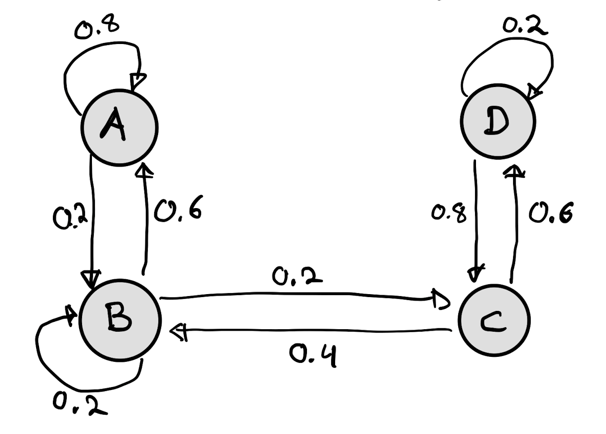
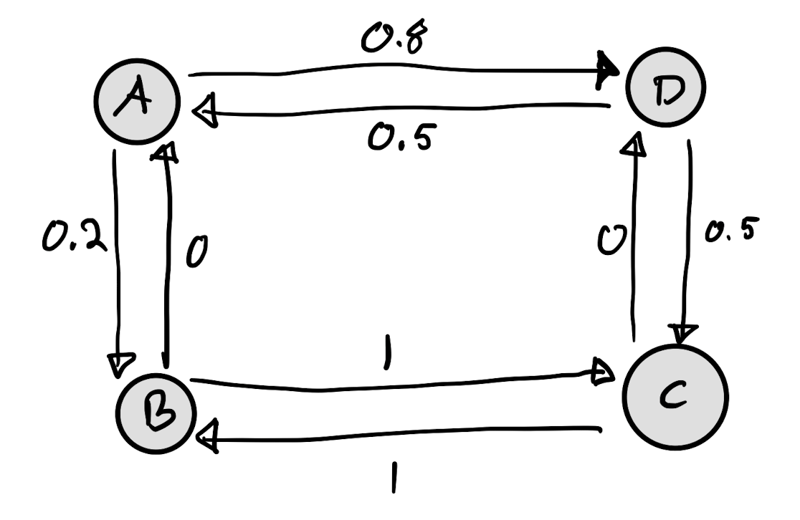
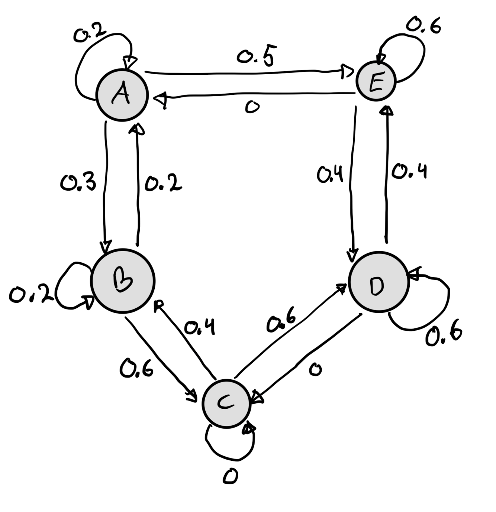
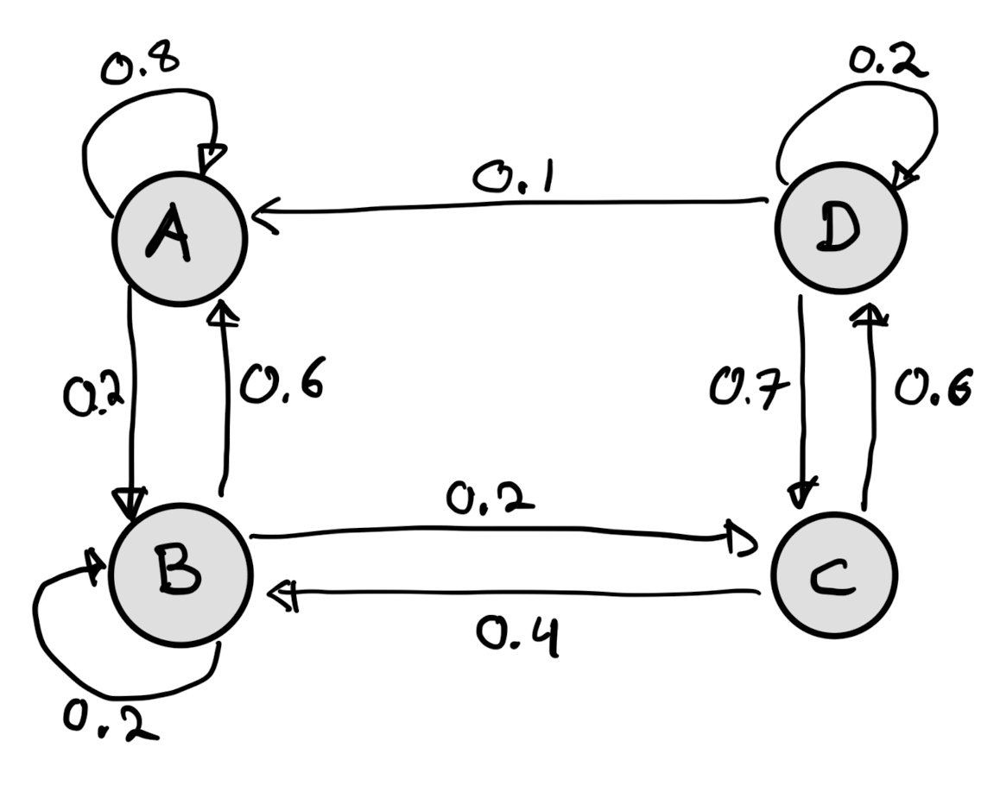
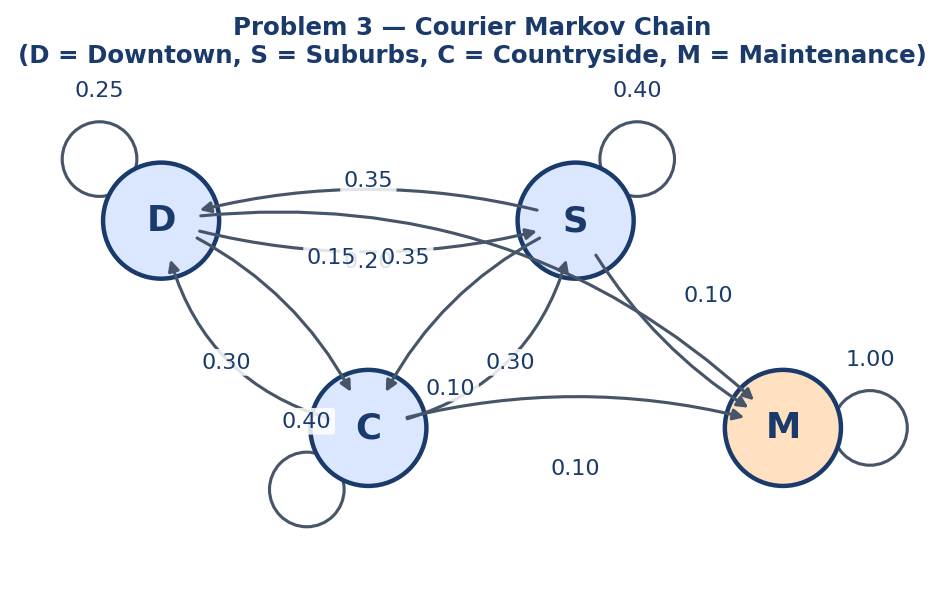

📐 Reference Sheets
Key formulas, added topic by topic as we cover each problem.
1 topic so far💻 Code Snippets
Copy-paste-ready Python functions for exam patterns.
1 snippet so far✅ Solved Exams
Clean, commented solutions built problem by problem.
2022 P1–P6 done 2023 P1–P3 done 2024 P1–P3 done 2026 P1–P3 done📐 Reference Sheet — Probability & Bayes
Covered in: 2022 Exam Problem 1
Binomial Distribution — $X \sim \text{Binom}(n, p)$
| What you want | Formula | scipy shortcut |
|---|---|---|
| $P(X = k)$ | PMF | binom.pmf(k, n, p) |
| $P(X \leq k)$ | CDF | binom.cdf(k, n, p) |
| $P(X > k)$ | Survival function | binom.sf(k, n, p) |
| $P(X \geq k)$ | Tail — most useful | binom.sf(k-1, n, p) |
^ is bitwise XOR, not power. Always use ** for exponentiation.Conditional Probability & Law of Total Probability
Compound Binomial Pattern (2022 P1)
When $N \sim \text{Binom}(20, p)$, $Z \mid N \sim \text{Binom}(20-N, \tfrac{1}{2})$, and $Y = N + Z$:
Key insight: marginalise over all values of the conditioning variable. The numerator restricts the outer sum to the "bad" cases ($n < 10$).
Edge case: if $T - n \leq 0$, then $P(Z \geq T-n \mid N=n) = 1$.
📐 Reference Sheet — LCG & Accept-Reject Sampling
Covered in: 2022 Exam Problem 2
Linear Congruential Generator (LCG)
Generates a sequence of pseudo-random integers via the recurrence:
| Parameter | Role |
|---|---|
| $M$ | Modulus — integers live in $\{0,1,\ldots,M-1\}$; also the period ceiling |
| $a$ | Multiplier |
| $b$ | Increment |
| seed $u_0$ | Starting value |
Hull-Dobell Theorem — Full Period Conditions
An LCG achieves full period $M$ (visits every integer in $\{0,\ldots,M-1\}$ before repeating) if and only if all three hold:
- $\gcd(b,\, M) = 1$ — $b$ and $M$ share no common factor
- Every prime factor $p$ of $M$ divides $(a - 1)$
- If $4 \mid M$, then $4 \mid (a - 1)$
Uniform $[0,1]$ from LCG
Divide each LCG output by the period $M$:
Accept-Reject Sampling
Goal: sample from target density $p_0(x)$ using a proposal $q(x)$ you can already sample from.
- Find $C = \sup_x \dfrac{p_0(x)}{q(x)}$
- Draw candidate $x \sim q$
- Draw $u \sim \text{Uniform}[0,1]$ independently
- Accept $x$ if $u \leq \dfrac{p_0(x)}{C \cdot q(x)}$, otherwise reject and repeat
For $p_0(x) = \frac{\pi}{2}|\sin(2\pi x)|$ with $q = \text{Uniform}[0,1]$:
💻 Snippet — Binomial Utils
Used in: 2022 Exam Problem 1
from math import factorial
def binomial(n, k):
"""Binomial coefficient C(n, k) = n! / (k! * (n-k)!)"""
return factorial(n) // (factorial(k) * factorial(n - k))
def binom_pmf(k, n, p):
"""P(X = k) for X ~ Binom(n, p)"""
return binomial(n, k) * p**k * (1 - p)**(n - k)
def binom_tail(k, n, p):
"""P(X >= k) for X ~ Binom(n, p)"""
return sum(binom_pmf(z, n, p) for z in range(k, n + 1))
📐 Reference Sheet — Concentration of Measure
Covered in: 2022 Exam Problem 3
Three Classes of Random Variables
| Class | Tail behaviour | Examples |
|---|---|---|
| Sub-Gaussian | Decay ≥ Gaussian: $e^{-ct^2}$ | Gaussian, Bernoulli, any bounded RV |
| Sub-Exponential | Decay ≥ Exponential: $e^{-ct}$ | $\chi^2$, Exponential, Poisson, $X^2$ for sub-Gaussian $X$ |
| Finite variance | Only $\mathbb{E}[X^2] < \infty$ | Very weak — tails can be heavy |
Two Types of Concentration
Which Quantities Concentrate — Quick Reference
| Quantity | Exponential? | Weak? | Reason |
|---|---|---|---|
| Emp. mean of sub-Gaussian | ✅ | ✅ | Hoeffding / sub-Gaussian MGF |
| Emp. mean of sub-Exponential | ✅ | ✅ | Bernstein inequality |
| Emp. mean of finite variance | ❌ | ✅ | Chebyshev only |
| Emp. variance of finite variance | ❌ | ❌ | Need $\mathbb{E}[X^4]<\infty$; not guaranteed |
| Emp. variance of sub-Gaussian | ✅ | ✅ | $X^2$ is sub-Exponential → Bernstein applies |
| Emp. variance of sub-Exponential | ❌ | ✅ | $X^2$ heavier than sub-Exp; all moments finite → Chebyshev |
| Emp. 3rd moment of sub-Gaussian | ❌ | ✅ | $X^3$ heavier than sub-Exp; all moments finite |
| Emp. 4th moment of sub-Gaussian | ✅ | ✅ | Exponential concentration holds (see notes) |
| Emp. mean of deterministic | ✅ | ✅ | Zero variance — trivially concentrates |
| Emp. 10th moment of Bernoulli | ✅ | ✅ | $X^{10}=X$ for Bernoulli → reduces to bounded mean |
📐 Reference Sheet — Markov Chains
Covered in: Assignment 2 Problem 1
Transition Matrix & $n$-Step Probabilities
A Markov chain with $d$ states has transition matrix $P \in \mathbb{R}^{d \times d}$ where $P_{ij} = P(X_{n+1}=j \mid X_n=i)$. Each row sums to 1.
First Passage (Hitting) Probability
$f_{ij}^{(n)}$ = probability of reaching state $j$ for the first time at step $n$, starting from $i$. For 2 steps from $i$ to $j$:
Irreducibility
A chain is irreducible if every state is reachable from every other state. Check: is the transition graph strongly connected?
Stationary Distribution
Row vector $\pi$ with $\pi P = \pi$ and $\sum_i \pi_i = 1$. Solved as a linear system:
import numpy as np
P = np.array([[0.3, 0.4, 0.3],
[0.2, 0.5, 0.3],
[0.4, 0.3, 0.3]])
A = P.T - np.eye(3)
A[-1, :] = [1, 1, 1] # replace last row with normalisation constraint
b = np.array([0, 0, 1])
pi = np.linalg.solve(A, b) # π ≈ [0.295, 0.421, 0.284]
Expected Hitting Time
$h_i$ = expected steps to first reach target state $T$ from state $i$. Set $h_T = 0$ and solve:
# Expected steps to Downtown (index 0) from Suburbs (1) or Countryside (2)
# h_S = 1 + 0.5*h_S + 0.3*h_C → 0.5*h_S - 0.3*h_C = 1
# h_C = 1 + 0.3*h_S + 0.3*h_C → -0.3*h_S + 0.7*h_C = 1
A2 = np.array([[0.5, -0.3],
[-0.3, 0.7]])
h_S, h_C = np.linalg.solve(A2, [1, 1])
📐 Reference Sheet — Maximum Likelihood Estimation
Covered in: Assignment 2 Problems 2–3
Log-Likelihood for IID Samples
Numerical MLE via scipy.optimize.minimize
import numpy as np
from scipy import optimize
def neg_log_lik(params):
mu, sigma = params
vals = (1/(sigma*np.sqrt(2*np.pi))) * np.exp(-0.5*((data-mu)/sigma)**2)
vals = np.maximum(vals, 1e-300) # numerical safety
return -np.sum(np.log(vals))
result = optimize.minimize(neg_log_lik, x0=[0, 1],
bounds=[(-20, 20), (0.2, 8.0)])
mu_hat, sigma_hat = result.x
Analytical MLE — Gamma-type Distribution
For $f(x;\lambda) = \frac{1}{24}\lambda^5 x^4 e^{-\lambda x}$ (shape $k=5$, rate $\lambda$):
General rule for Gamma$(\alpha, \lambda)$: $\hat\lambda_{\text{MLE}} = \alpha / \bar{x}$.
💻 Snippet — LCG & Accept-Reject Sampler
Used in: 2022 Exam Problem 2
import math
# ── Part 1: Linear Congruential Generator ──────────────────────────────────
def problem2_LCG(size=None, seed=0):
M, a, b = 512, 9, 1 # Hull-Dobell verified: gcd(1,512)=1, 2|(9-1), 4|(9-1)
u = seed
numbers = []
for _ in range(size):
u = (a * u + b) % M
numbers.append(u)
return numbers
# ── Part 2: Uniform [0,1] from LCG ────────────────────────────────────────
def problem2_uniform(generator=None, period=1, size=None, seed=0):
return [n / period for n in generator(size=size, seed=seed)]
# ── Part 3: Accept-Reject sampler ─────────────────────────────────────────
def problem2_accept_reject(uniformGenerator=None, size=None, n_iterations=None, seed=0):
if size is None:
size = n_iterations
samples = []
while len(samples) < size:
pair = uniformGenerator(size=2, seed=seed)
x, u = pair[0], pair[1]
if u <= abs(math.sin(2 * math.pi * x)): # C = pi/2 cancels
samples.append(x)
seed += 2 # advance seed so each iteration uses a fresh pair
return samples
# ── Usage ──────────────────────────────────────────────────────────────────
period = 512
uniform_sampler = lambda size, seed: problem2_uniform(
generator=problem2_LCG, period=period, size=size, seed=seed
)
samples = problem2_accept_reject(uniformGenerator=uniform_sampler, n_iterations=100, seed=1)
✅ 2022 Exam Solutions
Problem 1 — Probability Warmup 8p ✓ complete
Let's say we have an exam question which consists of 20 yes/no questions. From past performance of similar students, a randomly chosen student will know the correct answer to $N \sim \text{binom}(20,\ 11/20)$ questions. Furthermore, we assume that the student will guess the answer with equal probability to each question they don't know the answer to, i.e. given $N$ we define $Z \sim \text{binom}(20-N,\ 1/2)$ as the number of correctly guessed answers. Define $Y = N + Z$, i.e., $Y$ represents the number of total correct answers.
We are interested in setting a deterministic threshold $T$, i.e., we would pass a student at threshold $T$ if $Y \geq T$. Here $T \in \{0, 1, 2, \ldots, 20\}$.
- [5p] For each threshold $T$, compute the probability that the student knows less than 10 correct answers given that the student passed, i.e., $N < 10$. Put the answer in
problem11_probabilitiesas a list. - [3p] What is the smallest value of $T$ such that if $Y \geq T$ then we are 90% certain that $N \geq 10$?
Setup
- $N \sim \text{Binom}(20,\ 11/20)$ — questions the student knows
- $Z \mid N \sim \text{Binom}(20-N,\ 1/2)$ — correctly guessed answers
- $Y = N + Z$ — total correct; student passes if $Y \geq T$
Part 1 (5p) — P(N < 10 | Y ≥ T) for each T ∈ {0,…,20}
from math import factorial
def binomial(n, k):
return factorial(n) // (factorial(k) * factorial(n - k))
p = 11/20
p_N = lambda n: binomial(20, n) * (1-p)**(20-n) * p**n # P(N=n)
def p_Y_T_N(T, n):
"""P(Z >= T-n | N=n) = P(Y >= T | N=n)"""
return sum(binomial(20-n, z) * (0.5)**(20-n)
for z in range(max(0, T-n), 20-n+1))
def prob_numerator(T): # P(N < 10 and Y >= T)
return sum(p_N(n) * p_Y_T_N(T, n) for n in range(0, 10))
def prob_denominator(T): # P(Y >= T)
return sum(p_N(n) * p_Y_T_N(T, n) for n in range(0, 21))
problem11_probabilities = [
prob_numerator(t) / prob_denominator(t) for t in range(21)
]
Part 2 (3p) — Smallest T for 90% certainty that N ≥ 10
Equivalent to: smallest $T$ where $P(N < 10 \mid Y \geq T) \leq 0.10$.
smallest_t = 0
for t in range(0, 21):
if problem11_probabilities[t] <= 0.10:
smallest_t = t
break
problem12_T = smallest_t # → 17
Problem 2 — Random Variable Generation & Transformation 8p ✓ complete
The purpose of this problem is to show that you can implement your own sampler, this will be built in the following three steps:
- [2p] Implement a Linear Congruential Generator where you tested out a good combination (a large $M$ with $a, b$ satisfying the Hull-Dobell (Thm 6.8)) of parameters. Follow the instructions in the code block.
- [2p] Using a generator construct random numbers from the uniform $[0,1]$ distribution.
- [4p] Using a uniform $[0,1]$ random generator, generate samples from $$p_0(x) = \frac{\pi}{2}|\sin(2\pi x)|, \quad x \in [0,1]$$ using the Accept-Reject sampler (Algorithm 1 in TFDS notes) with sampling density given by the uniform $[0,1]$ distribution.
Setup
- Parameters chosen: $M = 512 = 2^9$, $a = 9$, $b = 1$ — all three Hull-Dobell conditions verified ✓
- Uniform $[0,1]$ obtained by dividing LCG output by period $M = 512$
- Accept-Reject proposal: $q = \text{Uniform}[0,1]$, so $C = \pi/2$, acceptance condition simplifies to $u \leq |\sin(2\pi x)|$
- Each iteration consumes 2 uniform numbers; seed is advanced by 2 to avoid cycling on the same pair
Part 1 (2p) — Linear Congruential Generator
def problem2_LCG(size=None, seed=0):
M, a, b = 512, 9, 1
u = seed
numbers = []
for _ in range(size):
u = (a * u + b) % M
numbers.append(u)
return numbers
Part 2 (2p) — Uniform [0,1] Sampler
def problem2_uniform(generator=None, period=1, size=None, seed=0):
return [n / period for n in generator(size=size, seed=seed)]
Part 3 (4p) — Accept-Reject Sampler
Key: $C = \pi/2$ cancels with $p_0(x)$, leaving acceptance condition $u \leq |\sin(2\pi x)|$.
import math
def problem2_accept_reject(uniformGenerator=None, size=None, n_iterations=None, seed=0):
if size is None:
size = n_iterations
samples = []
while len(samples) < size:
pair = uniformGenerator(size=2, seed=seed)
x, u = pair[0], pair[1]
if u <= abs(math.sin(2 * math.pi * x)):
samples.append(x)
seed += 2
return samples
Problem 3 — Concentration of Measure 8p ✓ complete
As you recall, we said that concentration of measure was simply the phenomenon where we expect that the probability of a large deviation of some quantity becoming smaller as we observe more samples: [0.4 points per correct answer]
- [4p] Which of the following will exponentially concentrate, i.e. for some $C_1,C_2,C_3,C_4$: $P(Z - \mathbb{E}[Z] \geq \epsilon) \leq C_1 e^{-C_2 n\epsilon^2} \wedge C_3 e^{-C_4 n(\epsilon+1)}$?
- The empirical mean of i.i.d. sub-Gaussian random variables?
- The empirical mean of i.i.d. sub-Exponential random variables?
- The empirical mean of i.i.d. random variables with finite variance?
- The empirical variance of i.i.d. random variables with finite variance?
- The empirical variance of i.i.d. sub-Gaussian random variables?
- The empirical variance of i.i.d. sub-Exponential random variables?
- The empirical third moment of i.i.d. sub-Gaussian random variables?
- The empirical fourth moment of i.i.d. sub-Gaussian random variables?
- The empirical mean of i.i.d. deterministic random variables?
- The empirical tenth moment of i.i.d. Bernoulli random variables?
- [4p] Which of the above will concentrate in the weaker sense, that for some $C_1$: $P(Z - \mathbb{E}[Z] \geq \epsilon) \leq \frac{C_1}{n\epsilon^2}$?
Setup
- Exponential concentration requires sub-Gaussian or sub-Exponential structure (or trivial zero-variance case)
- Weak concentration requires finite variance of the estimator itself — for the $k$-th empirical moment this means $\mathbb{E}[X^{2k}] < \infty$
- Cross-checked against autograded Assignment 1 (100% correct reference)
Part 1 (4p) — Exponential concentration
problem3_answer_1 = [1, 2, 5, 8, 9, 10]
# 1: mean sub-Gaussian (Hoeffding)
# 2: mean sub-Exponential (Bernstein)
# 5: variance sub-Gaussian (X² is sub-Exp → Bernstein)
# 8: fourth moment sub-Gaussian (exponential concentration holds)
# 9: mean deterministic (zero variance, trivial)
# 10: tenth moment Bernoulli (X¹⁰ = X → reduces to bounded mean)
Part 2 (4p) — Weak (Chebyshev) concentration
problem3_answer_2 = [1, 2, 3, 5, 6, 7, 8, 9, 10]
# Excluded: 4 (variance of finite variance) — needs E[X⁴]<∞, not guaranteed
# All sub-Gaussian and sub-Exponential RVs have all moments finite → Chebyshev applies
# Item 3 (mean of finite variance) weakly concentrates via Chebyshev directly
Problem 4 — SMS Spam Filtering 8p ✓ complete
In the following problem we will explore SMS spam texts. The result is a list of tuples with the first position being the SMS text and the second being a flag 0 = not spam and 1 = spam.
- [3p] Let $X$ be the random variable representing each SMS text, and $Y$ whether it is spam ($Y \in \{0,1\}$). Estimate $\mathbb{P}(Y = 1 \mid \text{"free" or "prize" is in } X)$. Hint: use
text.lower()to catch "Free", "Prize" etc. - [3p] Use Hoeffding's inequality to find $l > 0$ such that $\mathbb{P}(\hat{P} - l \leq \mathbb{E}[\hat{P}] \leq \hat{P} + l) \geq 0.9$.
- [2p] Repeat both exercises above for "free" appearing twice in the SMS.
Setup
- $n$ for Hoeffding = number of messages containing the keyword(s) — the sample space of the conditional probability
- 90% confidence → $\delta = 0.1$ → $l = \sqrt{\frac{\log(2/\delta)}{2n}}$
- Note: when $n$ is small the upper bound can exceed 1 — Hoeffding is conservative and doesn't know probabilities are capped at 1
Part 1 (3p) — $\hat{P}(Y=1 \mid \text{"free" or "prize"})$
denominator = 0 # messages containing "free" or "prize"
numerator = 0 # of those, how many are spam
for text, label in spam_no_spam:
text = text.lower()
if "free" in text or "prize" in text:
denominator += 1
if label == 1:
numerator += 1
problem4_hatP = numerator / denominator
Part 2 (3p) — Hoeffding 90% interval
import math
d = 0.1 # δ: 1 - 0.9 = 0.1
n = denominator # sample size = messages with keyword
problem4_l = math.sqrt(math.log(2/d) / (2*n))
# interval: [hatP - l, hatP + l] (clip to [0,1] if needed)
Part 3 (2p) — Repeat for "free" appearing twice
denominator2 = 0
numerator2 = 0
for text, label in spam_no_spam:
if text.lower().count("free") >= 2:
denominator2 += 1
if label == 1:
numerator2 += 1
problem4_hatP2 = numerator2 / denominator2
problem4_l2 = math.sqrt(math.log(2/d) / (2*denominator2))
# n is small → l2 > 0.4, upper bound may exceed 1 (expected, not a bug)
Problem 5 — Markovian Travel 8p ✓ complete
Dataset: data/flights.csv — 271,888 corporate flight records with columns from, to, userCode, etc. Each row is one flight (one Markov chain step).
- [2p] Load the CSV. Count
number_of_cities,number_of_userCodes,number_of_observations. - [2p] Build a 9×9 MLE transition matrix. Cities indexed alphabetically; rows must sum to 1.
- [2p] Compute the stationary distribution via eigendecomposition.
- [2p] Given start in Aracaju (SE), what is the probability of returning after exactly 3 steps?
Part 1 (2p) — Load & count
import pandas as pd
df = pd.read_csv("data/flights.csv")
number_of_cities = len(pd.concat([df["from"], df["to"]]).unique()) # 9
number_of_userCodes = df["userCode"].nunique() # 1335
number_of_observations = len(df) # 271888
pd.concat([df['from'], df['to']]) — not just one column — to capture all cities that appear as either origin or destination.Part 2 (2p) — MLE Transition Matrix
MLE estimate: $\hat{P}_{ij} = \dfrac{\text{count}(i \to j)}{\sum_k \text{count}(i \to k)}$. Build with makeFreqDict on a list of (from, to) tuples.
import numpy as np
def makeFreqDict(myDataList):
freqDict = {}
for res in myDataList:
freqDict[res] = freqDict.get(res, 0) + 1
return freqDict
cities = pd.concat([df["from"], df["to"]])
unique_cities = sorted(set(cities)) # alphabetical → Aracaju (SE) = index 0
n_cities = len(unique_cities)
transitions = list(zip(df["from"], df["to"])) # list of (from, to) tuples
transition_counts = makeFreqDict(transitions)
indexToCity = {i: city for i, city in enumerate(unique_cities)}
cityToIndex = {city: i for i, city in enumerate(unique_cities)}
transition_matrix = np.zeros((n_cities, n_cities))
for i in range(n_cities):
total = sum(transition_counts.get((indexToCity[i], indexToCity[k]), 0)
for k in range(n_cities))
if total > 0:
for j in range(n_cities):
transition_matrix[i, j] = (
transition_counts.get((indexToCity[i], indexToCity[j]), 0) / total
)
# Verify: shape (9,9), all row sums = 1.0, no NaN
Part 3 (2p) — Stationary Distribution
Stationary $\pi$ satisfies $\pi P = \pi$, i.e. it is a left eigenvector of $P$ (= right eigenvector of $P^\top$) for eigenvalue 1.
eigvals, eigvecs = np.linalg.eig(transition_matrix.T)
idx = np.argmin(np.abs(eigvals - 1)) # find eigenvalue closest to 1
pi = np.real(eigvecs[:, idx]) # take real part (imaginary ≈ 0)
stationary_distribution_problem5 = pi / np.sum(pi)
# → [0.137, 0.113, 0.128, 0.211, 0.088, 0.112, 0.062, 0.063, 0.087]
# sums to 1.0 ✓
np.linalg.eig returns right eigenvectors ($Av = \lambda v$). Transposing $P$ converts left eigenvectors of $P$ into right eigenvectors of $P^\top$, so we can use eig directly.Part 4 (2p) — 3-step Return Probability
By Chapman-Kolmogorov: $P(X_3 = i \mid X_0 = i) = (P^3)_{ii}$.
P3 = np.linalg.matrix_power(transition_matrix, 3)
a = cityToIndex['Aracaju (SE)']
return_probability_problem5 = P3[a, a]
# → ≈ 0.1333
Problem 6 — Black Box Testing 8p ✓ complete
Continuing with the SMS spam/no-spam data, approached as a pattern-recognition problem. Data is pre-split into train/test, and a "black box" model has been fit on the training data and produces predictions on the test set, stored in predictions_problem6 (true labels in Y_test_problem6).
- [2p] Compute precision for class 1, then provide a 95% Hoeffding confidence interval.
- [2p] Compute recall for class 1, then provide a 95% Hoeffding confidence interval.
- [2p] Compute accuracy (0–1 loss), then provide a 95% Hoeffding confidence interval.
- [2p] If we used a classifier with VC-dimension 3 instead, would the interval for accuracy on all the data be smaller?
Setup — confusion matrix
From Y_test_problem6 vs. predictions_problem6: $TP=4,\ FP=1,\ FN=1,\ TN=4$ (total $n=10$).
- Precision $= \dfrac{TP}{TP+FP}$ — "of predicted positives, how many are correct"
- Recall $= \dfrac{TP}{TP+FN}$ — "of actual positives, how many were found"
- Accuracy $= \dfrac{TP+TN}{TP+FP+FN+TN}$
- 95% confidence → $\delta = 0.05$ → $l = \sqrt{\frac{\log(2/\delta)}{2n}}$, where $n$ is the sample size relevant to that metric (denominator of the metric)
Part 1 (2p) — Precision + 95% interval
import math
problem6_precision = TP / (TP + FP) # → 0.8
d = 0.05
n = TP + FP # n = 5
problem6_precision_l = math.sqrt(math.log(2/d) / (2*n))
# CI: (max(0, P-l), min(1, P+l)) → (0.1926, 1.0)
Part 2 (2p) — Recall + 95% interval
problem6_recall = TP / (TP + FN) # → 0.8
n = TP + FN # n = 5
problem6_recall_l = math.sqrt(math.log(2/d) / (2*n))
# CI: (0.1926, 1.0)
Part 3 (2p) — Accuracy + 95% interval
problem6_accuracy = (TP + TN) / (TP + FP + FN + TN) # → 0.8
n = TP + FP + FN + TN # n = 10
problem6_accuracy_l = math.sqrt(math.log(2/d) / (2*n))
# → ≈ 0.4295, CI: (0.3705, 1.0)
Part 4 (2p) — VC-dimension bound comparison
Generalization bound for a hypothesis class with VC-dimension $d_{vc}$: $l_{VC} = \sqrt{\dfrac{8}{n}\left(d_{vc}\ln\dfrac{2n}{d_{vc}} + \ln\dfrac{4}{\delta}\right)}$.
d_vc = 3
n_total = len(Y_test_problem6) # in real exam: full dataset size (train+test)
delta = 0.05
problem6_VC_l = math.sqrt((8/n_total) * (d_vc*math.log(2*n_total/d_vc) + math.log(4/delta)))
# → ≈ 2.8388
problem6_VC_smaller = problem6_VC_l < problem6_accuracy_l
# → False
problem6_VC_smaller = False makes sense: the Hoeffding bound (Part 3) applies to one fixed, already-trained classifier, while the VC bound must hold uniformly over the entire hypothesis class — it pays an extra "search penalty" $d_{vc}\ln(2n/d_{vc})$ for the risk of overfitting during model selection. With only $n=10$ points that penalty dominates, so $l_{VC} \gg l_{\text{acc}}$.✅ 2023 Exam Solutions
Problem 1 — Markov Chain: Delivery Trucks 14p ✓ complete
A courier company's trucks move between three regions — Downtown (D), Suburbs (S), Countryside (C) — according to the transition matrix:
| Current region | → Downtown | → Suburbs | → Countryside |
|---|---|---|---|
| Downtown | 0.3 | 0.4 | 0.3 |
| Suburbs | 0.2 | 0.5 | 0.3 |
| Countryside | 0.4 | 0.3 | 0.3 |
- [2p] If a truck is currently in the Suburbs, what is the probability that it will be in the Downtown region after two time steps?
- [2p] If a truck is currently in the Suburbs, what is the probability that it will be in the Downtown region the first time after two time steps?
- [3p] Is this Markov chain irreducible? Explain your answer.
- [3p] What is the stationary distribution?
- [4p] Advanced: What is the expected number of steps until the first time one enters the Suburbs region having started in Downtown? (within 1 decimal point, hitting times up to 30 steps suffice)
Setup
import numpy as np
P = np.array([[0.3, 0.4, 0.3],
[0.2, 0.5, 0.3],
[0.4, 0.3, 0.3]]) # rows/cols ordered D, S, C
Part 1 (2p) — P(X₂=D | X₀=S)
By Chapman-Kolmogorov, $n$-step transition probabilities are given by the matrix power $P^n$ (matrix multiplication, not elementwise power).
P2 = P @ P
problem1_p1 = P2[1, 0] # row S (index 1), col D (index 0)
# → 0.28
P @ P (matrix multiplication), not P**2 (elementwise) — Chapman-Kolmogorov requires matrix powers, not elementwise powers.Part 2 (2p) — first time Downtown is at step 2
This is a first-passage probability: $X_1 \neq D$ AND $X_2 = D$. Decompose over the value of $X_1$, excluding the path that already visits D at step 1:
problem1_p2 = P[1,1]*P[1,0] + P[1,2]*P[2,0]
# = 0.5*0.2 + 0.3*0.4 = 0.22
Sanity check: $0.28 - 0.22 = 0.06 = P_{S,D}P_{D,D}$ — the path excluded relative to Part 1. ✓
Part 3 (3p) — Irreducibility
A chain is irreducible if every state communicates with every other state, i.e. for all $i,j$ there exists $n$ with $(P^n)_{ij}>0$ — the chain forms a single communicating class.
problem1_irreducible = True
Justification: every entry of $P$ is strictly positive, so every state can reach every other state in a single step. Hence the chain consists of one communicating class and is irreducible.
Since all entries of P are strictly positive, every state communicates with every other state in a single step, so the chain consists of one communicating class and is irreducible.
Part 4 (3p) — Stationary distribution
$\pi$ satisfies $\pi P = \pi$ and $\sum_i \pi_i = 1$ — equivalently $\pi^\top$ is the eigenvector of $P^\top$ for eigenvalue 1, normalized to sum to 1.
A = np.vstack([(P.T - np.eye(3))[:2], np.ones(3)])
b = np.array([0, 0, 1])
problem1_stationary = np.linalg.solve(A, b)
# → [0.28888889, 0.41111111, 0.3]
Part 5 (4p) — Expected hitting time, Downtown → Suburbs
Let $h_D=E_D[T_S]$, the expected number of steps to first reach S starting from D. By first-step analysis, for transient states $i\neq S$:
The transient states are $\{D,C\}$. With $Q=\begin{pmatrix}P_{DD}&P_{DC}\\P_{CD}&P_{CC}\end{pmatrix}=\begin{pmatrix}0.3&0.3\\0.4&0.3\end{pmatrix}$ (the sub-stochastic matrix over transient states), the fundamental matrix gives $\mathbf{h}=(I-Q)^{-1}\mathbf{1}$.
Q = np.array([[0.3, 0.3],
[0.4, 0.3]])
h = np.linalg.solve(np.eye(2) - Q, np.ones(2))
problem1_ET = h[0] # h_D ≈ 2.7027 = 100/37
Method: First-step analysis (fundamental matrix of the absorbing chain)
Let h_D = E_D[T_S] and h_C = E_C[T_S] denote the expected number of steps to first reach Suburbs (S), starting from Downtown (D) and Countryside (C) respectively.
Treating S as absorbing, conditioning on the first transition gives:
h_D = 1 + P_DD * h_D + P_DC * h_C
h_C = 1 + P_CD * h_D + P_CC * h_Csince a transition into S contributes 0 to the remaining expected time.
In matrix form, with
Q = [[P_DD, P_DC], [[0.3, 0.3],
[P_CD, P_CC]] = [0.4, 0.3]]the sub-stochastic matrix restricted to the transient states {D, C}, the vector of expected hitting times is:
h = (I - Q)^-1 * 1Solving numerically gives h_D ≈ 2.7027 (and h_C ≈ 2.9730). Exactly, det(I - Q) = 0.37, so h_D = 1.0 / 0.37 = 100/37.
Interpretation: Starting in Downtown, a truck takes on average about 2.70 time steps before it first visits the Suburbs region. This matches intuition: P(D→S) = 0.4 is the largest single transition probability out of Downtown, so reaching Suburbs tends to happen fairly quickly — but self-transitions (P(D→D) = 0.3) and detours through Countryside (P(D→C) = 0.3 then P(C→S) = 0.3) add to the expected delay.
Problem 2 — Linear Regression: Abalone Age 13p ✓ complete
Dataset: data/abalone.csv — physical measurements of abalone shells and their age, measured in Rings. Train a linear regression model to predict Rings from the physical measurements, using an 80/20 train/test split.
- [2p] Load the data into
problem2_df; identify features and target. - [2p] Split into train/test (80/20,
random_state=42). - [1p] Train a linear regression model.
- [3p] Compute the MAE on the test set; plot the EDF of the residuals with 95% DKW confidence bands.
- [2p] Scatter plot of predicted vs. true values (test set).
- [3p] Discuss the model's performance.
Part 1 (2p) — Load data, choose features/target
import pandas as pd
problem2_df = pd.read_csv('data/abalone.csv')
problem2_features = ["Length", "Diameter", "Height", "Whole weight",
"Shucked weight", "Viscera weight", "Shell weight"]
problem2_target = "Rings"
Rings is the target — it's what determines age. Every other column is a physical measurement available without cutting the shell open, so all are valid features.
Part 2 (2p) — Train/test split
from sklearn.model_selection import train_test_split
problem2_X_train, problem2_X_test, problem2_y_train, problem2_y_test = train_test_split(
problem2_df[problem2_features],
problem2_df[problem2_target],
train_size=0.8,
random_state=42
)
Part 3 (1p) — Train the model
from sklearn.linear_model import LinearRegression
problem2_model = LinearRegression()
problem2_model.fit(problem2_X_train, problem2_y_train)
Part 4 (3p) — MAE + EDF of residuals with DKW confidence bands
from sklearn.metrics import mean_absolute_error
problem2_predictions = problem2_model.predict(problem2_X_test)
problem2_mae = mean_absolute_error(problem2_y_test, problem2_predictions)
# → ≈ 1.629
from Utils import makeEDF, plotEDF
problem2_residuals = problem2_y_test.values - problem2_predictions
edf = makeEDF(problem2_residuals)
plotEDF(edf, confidence_band=True, alpha=0.95,
title="EDF of residuals with 95% DKW confidence band")
makeEDF builds the empirical CDF of the residuals; plotEDF(..., confidence_band=True) overlays the DKW band $\sup_x|F_n(x)-F(x)|\le\varepsilon$ with $\varepsilon=\sqrt{\tfrac{1}{2n}\ln\tfrac{2}{1-\alpha}}$ — a 95% confidence envelope for the true residual CDF.
Part 5 (2p) — Scatter plot: predicted vs. true
import matplotlib.pyplot as plt
plt.scatter(problem2_predictions, problem2_y_test)
plt.xlabel("Predicted Rings")
plt.ylabel("True Rings")
plt.plot([problem2_y_test.min(), problem2_y_test.max()],
[problem2_y_test.min(), problem2_y_test.max()], 'r--')
plt.title("Predicted vs True (test set)")
plt.show()
Part 6 (3p) — Discussion
- MAE ≈ 1.63 rings. Since
Ringsranges from 1–29 with mean ≈ 9.9, an average error of ~1.63 is roughly 16% of the mean target — moderate, but the prediction is typically off by more than 1.5 years (age ≈ rings + 1.5). - Scatter plot. Points form a rough positive trend around the $y=x$ line but with substantial spread, especially at higher ring counts — the model systematically underestimates for very old abalones.
- Overall. Plain linear regression captures the broad trend (bigger/heavier shells → more rings) but lacks the flexibility to model the non-linear saturation at higher ages. A non-linear model or a log-transformed target could reduce the MAE further.
Discussion on the value of the MAE
The MAE is approximately 1.63 rings. Since Rings ranges from 1 to 29 with a mean around 9.9, an average error of ~1.63 rings is roughly 16% of the mean target value. This is a moderate error: not catastrophic, but far from precise — for an abalone of average age, the model's prediction is typically off by more than a year and a half (since age ≈ rings + 1.5 years).
Discussion on the predicted vs. true scatterplot
The points form a rough positive trend around the y = x line, but with substantial spread, especially at higher ring counts. The model systematically underestimates for very old abalones (high true Rings, predictions cluster lower) — the relationship between the physical measurements and Rings is not perfectly linear, and older abalones show more variability in shell measurements relative to age.
Discussion
Overall, a plain linear regression captures the broad trend (larger/heavier shells → more rings) but lacks the flexibility to model the non-linear saturation at higher ages. A non-linear model (e.g. polynomial features, random forest) or a log-transform of the target could likely reduce the MAE further.
Problem 3 — Poisson Regression: Doctor Visits 13p ✓ complete
Dataset: data/visits_clean.csv — patient characteristics and healthcare utilization counts. Model ofp (number of physician office visits) as $Y\mid X\sim\text{Poisson}(\lambda(x))$, $\lambda(x)=\exp(\alpha\cdot x+\beta)$, i.e. $f_{Y\mid X}(y,x)=\dfrac{\lambda^y e^{-\lambda}}{y!}$.
- [3p] Load
problem3_df; decide and motivate features/target (hint: should we really useofnpetc.?). - [3p] Build
problem3_X/problem3_yas numpy arrays; 80/20 train/test split,random_state=42. - [2p] Derive the log-loss from the Poisson likelihood and implement it in
PoissonRegression.loss. - [2p] Train the
PoissonRegressionmodel on the training data. - [3p] Choose/compute a reasonable evaluation metric, interpret it, and compare to a naive baseline.
Part 1 (3p) — Load data, choose features/target
import pandas as pd
problem3_df = pd.read_csv('data/visits_clean.csv', sep=r'\s+')
problem3_features = ["exclhlth", "poorhlth", "numchron", "adldiff",
"noreast", "midwest", "west", "age", "male",
"married", "school", "faminc", "employed",
"privins", "medicaid"]
problem3_target = "ofp"
ofnp, opp, opnp, emr, hosp are other utilization counts measured over the same period as ofp — co-determined outcomes, not pre-existing patient characteristics. Using them as features would be a form of leakage, so they're excluded. The remaining 15 demographic/health-status/insurance variables are exogenous "patient characteristics" and form the feature set (≈290 obs/feature with $n=4406$ — comfortably enough data for 15 features).What features are reasonable?
The target is ofp (number of physician office visits). The variables ofnp, opp, opnp, emr, hosp are other healthcare utilization counts, measured over the same period as ofp — they are co-determined outcomes, not pre-existing patient characteristics. Including them would be a form of leakage/circular reasoning (using one outcome to predict another), so they are excluded. The remaining 15 variables (health status, demographics, socioeconomic status, insurance) are exogenous "patient characteristics" available independent of the visit count itself, so they form problem3_features.
In regards to how much data we have, how many features do you think we should aim for?
We have 4406 observations and 15 candidate features — a ratio of ~290 observations per parameter, comfortably above common rules of thumb (e.g. 10-20 obs/parameter) for avoiding overfitting in a linear model, so using all 15 is reasonable.
What other features would you like to have used but was not collected?
Specific chronic diagnoses (vs. just a count), medication usage, distance/access to a primary care provider, smoking/alcohol use, and BMI would likely add predictive value beyond what is captured here.
Discussion
By excluding the other utilization variables we keep the model interpretable as "patient characteristics → expected visit count", which matches the stated goal.
Part 2 (3p) — Build X/y, train/test split
import numpy as np
from sklearn.model_selection import train_test_split
problem3_X = problem3_df[problem3_features].to_numpy()
problem3_y = problem3_df[problem3_target].to_numpy()
problem3_X_train, problem3_X_test, problem3_y_train, problem3_y_test = train_test_split(
problem3_X, problem3_y, train_size=0.8, random_state=42
)
Part 3 (2p) — Derive & implement the Poisson log-loss
For $Y\mid X\sim\text{Poisson}(\lambda(x))$, $f(y,x)=\dfrac{\lambda^y e^{-\lambda}}{y!}$. The log-likelihood per observation is $\log f = y\log\lambda - \lambda - \log(y!)$. The $\log(y!)$ term doesn't depend on $\alpha,\beta$, so it's dropped (also avoids numerical issues with factorials). The loss to minimize (negative log-likelihood, summed over the data) is:
class PoissonRegression(object):
def __init__(self):
self.coeffs = None
self.result = None
def fit(self, X, Y):
import numpy as np
from scipy import optimize
def loss(coeffs):
eta = np.dot(X, coeffs[:-1]) + coeffs[-1] # = log(lambda)
lam = np.exp(eta)
return np.sum(lam - Y * eta)
initial_arguments = np.zeros(shape=X.shape[1]+1)
self.result = optimize.minimize(loss, initial_arguments, method='cg')
self.coeffs = self.result.x
def predict(self, X):
if self.coeffs is not None:
return np.exp(np.dot(X, self.coeffs[:-1]) + self.coeffs[-1])
exp then log of the same quantity — more numerically stable.Part 4 (2p) — Fit the model
problem3_model = PoissonRegression()
problem3_model.fit(problem3_X_train, problem3_y_train)
print(problem3_model.result)
method='cg', scipy typically reports success: False ("Desired error not necessarily achieved due to precision loss") — but the loss value and coefficients match BFGS to ~5 decimal places, so the fit has effectively converged. This is a known quirk of cg near a flat minimum, not a failed fit.Part 5 (3p) — Evaluation metric + naive comparison
from sklearn.metrics import mean_absolute_error
problem3_predictions = problem3_model.predict(problem3_X_test)
problem3_metric = mean_absolute_error(problem3_y_test, problem3_predictions)
# → ≈ 4.28
- Metric choice: MAE —
ofpis a count, so MAE gives an interpretable "average number of visits off by". - Result: model MAE ≈ 4.28 visits vs. a naive baseline that always predicts $\bar{y}_{\text{train}}\approx5.72$ (MAE ≈ 4.66) — an ~8% reduction.
- Interpretation: the model improves on the naive baseline but only modestly —
ofphas very high variance (many patients with 0 visits, a few with very many), so patient characteristics alone explain only part of the variation in visit counts.
Discussion on reasonable metrics and discussion about the value of the metric
Since ofp is a count (Poisson-distributed), Mean Absolute Error (MAE) is a natural, interpretable choice: it tells us the average number of visits the prediction is off by. The model achieves MAE ≈ 4.28 visits.
Comparison with a naive model
A naive baseline that always predicts the training mean (y_train.mean() ≈ 5.72) achieves MAE ≈ 4.66. The Poisson model improves on this naive baseline (4.28 vs 4.66, about an 8% reduction), but the improvement is modest — ofp has very high variance (many patients with 0 visits, a few with very many), so patient characteristics alone explain only part of the variation in visit counts.
✅ 2024 Exam Solutions
Problem 1 — Rejection & Inversion Sampling 14p ✓ complete
Do rejection sampling from complicated distributions, then use the samples to compute integrals via Monte Carlo integration. Keep in mind that choosing a good sampling distribution is often key to avoid too much rejection.
- [4p] Fill in
problem1_inversionto produce samples from $F(x)=\begin{cases}0,&x\le0\\\frac{e^{x^2}-1}{e-1},&0 < x < 1\\1,&x\ge1\end{cases}$ using rejection sampling. - [2p] Produce 100000 samples in
problem1_samplesand plot the histogram against the true density. (There is a@timeout(10)decorator — generating 100000 samples must take <10s.) - [2p] Use
problem1_samplesto approximate $\int_0^1 \sin(x)\,\frac{2e^{x^2}x}{e-1}\,dx$ and store the result inproblem1_integral. - [2p] Use Hoeffding's inequality to produce a 95% confidence interval for the integral, stored as a tuple in
problem1_interval. - [4p] Fill in
problem1_inversion_2to produce samples from $F(x)=\begin{cases}0,&x\le0\\20xe^{20-1/x},&0 < x < \frac{1}{20}\\1,&x\ge\frac{1}{20}\end{cases}$ using rejection sampling. Hint: the wrong proposal rejects ≥9/10 times — the right one gives 100000 samples in <2s.
Part 1 (4p) — Sampling from $F(x)=\frac{e^{x^2}-1}{e-1}$
For $0 < x < 1$, $F$ is a strictly increasing, continuous CDF mapping $(0,1)\to(0,1)$ — it is directly invertible, so the simplest exact sampler is inverse-transform sampling (a "zero-rejection" special case of rejection sampling). Set $u=F(x)$ and solve for $x$:
Since $U\sim\text{Uniform}(0,1)$, $X=\sqrt{\ln(1+U(e-1))}$ has CDF $F$.
import numpy as np
from Utils import timeout
@timeout(10)
def problem1_inversion(n_samples=1):
u = np.random.rand(n_samples)
x = np.sqrt(np.log(1.0 + u * (np.e - 1.0)))
return x
timeout is a decorator factory — its signature is timeout(seconds=10, error_message=...). Writing the bare @timeout (no parentheses) binds the function itself to the seconds parameter, so problem1_inversion becomes the inner wrapper applied to the wrong thing, and calling it returns a function object instead of an np.ndarray (TypeError: object of type 'function' has no len()). Always write @timeout(10).Part 2 (2p) — 100000 samples + histogram vs. true density
The density is $f(x)=F'(x)=\dfrac{2xe^{x^2}}{e-1}$ for $x\in(0,1)$.
problem1_samples = problem1_inversion(100000)
import matplotlib.pyplot as plt
xx = np.linspace(0, 1, 500)
plt.hist(problem1_samples, bins=50, density=True, alpha=0.6, label="samples")
plt.plot(xx, 2*xx*np.exp(xx**2)/(np.e-1), 'r-', label="true density")
plt.legend(); plt.show()
Part 3 (2p) — Monte Carlo integral
Recognize the integral as $E_{X\sim F}[\sin(X)]$, since $f(x)=\frac{2xe^{x^2}}{e-1}$ is exactly the density we sampled from:
problem1_integral = float(np.mean(np.sin(problem1_samples)))
Part 4 (2p) — 95% Hoeffding interval
$g(x)=\sin(x)$ for $x\in[0,1]$ takes values in $[0,1]$ (since $\sin$ is increasing on $[0,1]$ and $\sin(0)=0,\ \sin(1)\approx0.841\le1$), so $g(X)$ is a bounded i.i.d. sample with range $b-a=1$. Hoeffding's inequality gives, for confidence $1-\delta$:
# Part 4
n = len(problem1_samples)
delta = 0.05
eps = (1.0 - 0.0) * np.sqrt(np.log(2.0/delta) / (2.0*n))
problem1_interval = [problem1_integral - eps, problem1_integral + eps]
Part 5 (4p) — Sampling from $F(x)=20xe^{20-1/x}$, $0 < x < \frac{1}{20}$
First find the density $f(x)=F'(x)$ by the product rule:
Key trick — substitute $Y=1/X$. Sampling directly from $f(x)$ on $(0,\frac{1}{20})$ is awkward because the density is sharply peaked near $0$. But $X\in(0,\frac{1}{20}) \iff Y=1/X\in(20,\infty)$, and by the change-of-variables formula ($x=1/y$, $|dx/dy|=1/y^2$, and $20-1/x=20-y$, $1+1/x=1+y$):
Propose $Y$ from a shifted Exponential(1): $g(y)=e^{-(y-20)}=e^{20-y}$ for $y\ge20$ (i.e. Y = 20 + Exponential(1)). Then:
so accept $Y=y$ with probability $\dfrac{f_Y(y)}{M\cdot g(y)} = \dfrac{20(1/y+1/y^2)}{M}$, and return $X=1/Y$.
# Part 5
def problem1_inversion_2(n_samples=1):
c = 1.05 # envelope constant: 20*(1/y+1/y^2) <= c for all y>=20
out = np.empty(n_samples, dtype=float)
filled = 0
while filled < n_samples:
need = n_samples - filled
batch = int(need / 0.9) + 50 # oversample slightly
y = 20.0 + np.random.exponential(1.0, size=batch)
accept_prob = 20.0*(1.0/y + 1.0/y**2) / c
accepted = y[np.random.rand(batch) < accept_prob]
take = min(len(accepted), need)
out[filled:filled+take] = 1.0 / accepted[:take]
filled += take
return out
Choice of sampling distribution (Part 5)
Direct rejection sampling for $X$ on $(0,1/20)$ is inefficient because $f_X(x)=20e^{20-1/x}(1+1/x)$ is extremely concentrated near $x=0$ — most mass of a uniform or exponential proposal on $(0,1/20)$ would fall where $f_X$ is tiny, giving a rejection rate >90%, as hinted.
Substituting $Y=1/X$ maps $(0,1/20)\to(20,\infty)$ and gives $f_Y(y)=20e^{20-y}(1/y+1/y^2)$, which is approximately a shifted $\text{Exponential}(1)$ on $[20,\infty)$ (the $e^{20-y}$ factor dominates). Using $g(y)=e^{20-y}$ as the proposal and envelope constant $M=1.05$ (the supremum of $20(1/y+1/y^2)$ over $y\ge20$, attained at $y=20$) gives an acceptance probability close to $1/1.05\approx95\%$ — so 100000 samples require only ≈105000 proposals, comfortably under 2 seconds.
Problem 2 — Proportional Spam Classifier 13p ✓ complete
Build a proportional model $\mathbb{P}(Y=1\mid X)=G(\beta_0+\beta\cdot X)$, where $G$ is the logistic function, for the spam vs. not-spam data. Features are the presence/absence of the words "free", "prize", "win" — $X_1,X_2,X_3\in\{0,1\}$.
- [2p] Load
data/spam.csv; buildproblem2_X(shape(n,3), presence of free/prize/win) andproblem2_Y(shape(n,), 1 = spam). Split 40% train / 20% calibration / 40% test. - [4p] Derive the logistic-regression loss from the lecture notes and implement it in
ProportionalSpam.loss. Check against theTestcell. - [4p] Train
problem2_pson the training data. Buildproblem2_X_pred(shape(n,1)) from predictions on the calibration set, and fit asklearn.tree.DecisionTreeRegressorcalibrator,problem2_calibrator. - [3p] Use
problem2_ps+problem2_calibratorto getproblem2_final_predictionson the test set. Compute the 0-1 test lossproblem2_01_lossand a 99% confidence intervalproblem2_interval(tuple).
Part 1 (2p) — Load data, build features, 40/20/40 split
Each feature is a binary indicator for whether the word appears (as a whole word, case-insensitive) in the message body. The split uses a fixed-seed permutation so it's reproducible.
import pandas as pd
import numpy as np
df = pd.read_csv("data/spam.csv", encoding="ISO-8859-1", usecols=[0, 1])
df = df.dropna(axis=1, how="all")
X1 = df["v2"].str.contains(r"\bfree\b", case=False, na=False).astype(int).to_numpy()
X2 = df["v2"].str.contains(r"\bprize\b", case=False, na=False).astype(int).to_numpy()
X3 = df["v2"].str.contains(r"\bwin\b", case=False, na=False).astype(int).to_numpy()
problem2_X = np.column_stack((X1, X2, X3))
problem2_Y = (df["v1"] == "spam").astype(int).to_numpy()
n = problem2_X.shape[0]
rng = np.random.default_rng(seed=0)
perm = rng.permutation(n)
train_end = int(0.4 * n)
calib_end = int(0.6 * n)
train_idx, calib_idx, test_idx = perm[:train_end], perm[train_end:calib_end], perm[calib_end:]
problem2_X_train, problem2_X_calib, problem2_X_test = problem2_X[train_idx], problem2_X[calib_idx], problem2_X[test_idx]
problem2_Y_train, problem2_Y_calib, problem2_Y_test = problem2_Y[train_idx], problem2_Y[calib_idx], problem2_Y[test_idx]
\b...\b word-boundary regex matters: without it, "win" would match inside "winner" or "winning", conflating a different (much more common) signal with the literal word "win".Part 2 (4p) — Derive & implement the logistic loss
With $G(z)=\dfrac{1}{1+e^{-z}}$ and $z_i=\beta_0+\beta\cdot X_i$, each $Y_i\in\{0,1\}$ is modeled as $Y_i\mid X_i \sim \text{Bernoulli}(G(z_i))$, i.e. $\mathbb{P}(Y_i=1\mid X_i)=G(z_i)$ and $\mathbb{P}(Y_i=0\mid X_i)=1-G(z_i)$. The likelihood of the whole dataset is:
Taking $-\log$ and averaging gives the (mean) negative log-likelihood — the loss to minimize:
# Part 2
class ProportionalSpam(object):
def __init__(self):
self.coeffs = None
self.result = None
def loss(self, X, Y, coeffs):
z = coeffs[0] + np.dot(X, coeffs[1:]) # beta_0 + X . beta
G = 1 / (1 + np.exp(-z)) # logistic function
G = np.clip(G, 1e-12, 1 - 1e-12) # avoid log(0)
return -np.mean(Y*np.log(G) + (1-Y)*np.log(1-G))
def fit(self, X, Y):
from scipy import optimize
opt_loss = lambda coeffs: self.loss(X, Y, coeffs)
initial_arguments = np.zeros(shape=X.shape[1]+1)
self.result = optimize.minimize(opt_loss, initial_arguments, method='cg')
self.coeffs = self.result.x
def predict(self, X):
if self.coeffs is not None:
G = lambda x: np.exp(x)/(1+np.exp(x))
return np.round(10*G(np.dot(X, self.coeffs[1:]) + self.coeffs[0]))/10
np.clip(G, 1e-12, 1-1e-12) is essential: for extreme $z$, $G(z)\to0$ or $1$ exactly in floating point, and $\log(0)=-\infty$ would make the loss nan/inf — clipping keeps the optimizer well-behaved without materially changing the loss value.predict rounds $G(z)$ to the nearest $0.1$ — this coarsens the raw probability into 11 buckets $\{0,0.1,\dots,1.0\}$, which is exactly what makes the calibration step (Part 3) tractable: the DecisionTreeRegressor only needs to learn a correction per bucket, not a continuous function.Part 3 (4p) — Train + calibrate
The trained ProportionalSpam model outputs coarse, rounded probabilities — these are not necessarily calibrated (e.g. "0.3" doesn't necessarily mean "30% of such emails are spam"). The fix: predict on the held-out calibration set, then fit a regressor mapping raw prediction → true label, learning the empirical spam-rate within each bucket.
# Part 3
from sklearn.tree import DecisionTreeRegressor
problem2_ps = ProportionalSpam()
problem2_ps.fit(problem2_X_train, problem2_Y_train)
problem2_X_pred = problem2_ps.predict(problem2_X_calib).reshape(-1, 1)
problem2_calibrator = DecisionTreeRegressor(max_depth=3, random_state=0)
problem2_calibrator.fit(problem2_X_pred, problem2_Y_calib)
max_depth=3 on a 1-D input with ≤11 distinct values (the rounded buckets) is plenty — it effectively learns a lookup table "bucket value → empirical $\mathbb{P}(Y=1\mid\text{bucket})$" from the calibration data, a simple form of histogram/Platt-style recalibration.Part 4 (3p) — Final predictions, 0-1 loss, 99% interval
Chain the two models: raw problem2_ps prediction on the test set → calibrator → calibrated probability. Then apply the Bayes classifier (threshold at $0.5$) to get a hard decision, and compute the 0-1 loss with a Hoeffding interval (bounded loss $\in\{0,1\}$, so $b-a=1$).
# Part 4
from Utils import epsilon_bounded
problem2_test_raw = problem2_ps.predict(problem2_X_test).reshape(-1, 1)
problem2_final_predictions = problem2_calibrator.predict(problem2_test_raw)
decisions = (problem2_final_predictions >= 0.5).astype(int)
problem2_01_loss = float(np.mean(decisions != problem2_Y_test))
# → ≈ 0.0996
n_test = len(problem2_Y_test)
eps = epsilon_bounded(n_test, 1, 0.01) # Hoeffding, |loss|<=1, alpha=0.01 → 99%
problem2_interval = (max(problem2_01_loss - eps, 0), min(problem2_01_loss + eps, 1))
# → ≈ (0.065, 0.134)
epsilon_bounded(n, b, alpha) returns the Hoeffding half-width $b\sqrt{\frac{1}{2n}\ln\frac{2}{\alpha}}$ for a $[0,b]$-bounded loss at confidence $1-\alpha$. Here $\alpha=0.01$ gives a 99% interval, wider than the 95% interval would be for the same $n$.Derivation of the loss (Part 2)
Each label $Y_i\in\{0,1\}$ is Bernoulli with success probability $G(\beta_0+\beta\cdot X_i)$. The likelihood of the dataset is $\prod_i G(z_i)^{Y_i}(1-G(z_i))^{1-Y_i}$ with $z_i=\beta_0+\beta\cdot X_i$. Taking the negative log and averaging over $n$ gives the loss to minimize: $L=-\frac{1}{n}\sum_i\big[Y_i\log G(z_i)+(1-Y_i)\log(1-G(z_i))\big]$, implemented directly with $G(z)=1/(1+e^{-z})$ and a small clip to avoid $\log 0$.
Why calibrate (Part 3)?
The predict method rounds $G(z)$ to the nearest tenth — a deliberate coarsening that turns the continuous logistic output into a small number of discrete "scores". A DecisionTreeRegressor(max_depth=3) trained on (rounded score → true label) on a held-out calibration set learns the empirical spam rate within each score bucket, correcting any systematic over/under-confidence of the raw model before it's evaluated on the test set.
Problem 3 — Markov Chains 13p ✓ complete
Consider the following four Markov chains. Answer each of the 5 questions below for all four chains.

Markov chain A

Markov chain B

Markov chain C

Markov chain D
- [2p] What is the transition matrix?
- [2p] Is the Markov chain irreducible?
- [3p] Is the Markov chain aperiodic? What is the period for each state?
- [3p] Does the Markov chain have a stationary distribution, and if so, what is it?
- [3p] Is the Markov chain reversible?
State order $(A,B,C,D[,E])\to$ indices $(0,1,2,3[,4])$ for all four chains.
Part 1 (2p) — Transition matrices
# PART 1 — transition matrices, rows must sum to 1
import numpy as np
problem3_A = np.array([
[0.8, 0.2, 0.0, 0.0],
[0.6, 0.2, 0.2, 0.0],
[0.0, 0.4, 0.0, 0.6],
[0.0, 0.0, 0.8, 0.2]
])
problem3_B = np.array([
[0.0, 0.2, 0.0, 0.8],
[0.0, 0.0, 1.0, 0.0],
[0.0, 1.0, 0.0, 0.0],
[0.5, 0.0, 0.5, 0.0]
])
problem3_C = np.array([
[0.2, 0.3, 0.0, 0.0, 0.5],
[0.2, 0.2, 0.6, 0.0, 0.0],
[0.0, 0.4, 0.0, 0.6, 0.0],
[0.0, 0.0, 0.0, 0.6, 0.4],
[0.0, 0.0, 0.0, 0.4, 0.6]
])
problem3_D = np.array([
[0.8, 0.2, 0.0, 0.0],
[0.6, 0.2, 0.2, 0.0],
[0.0, 0.4, 0.0, 0.6],
[0.1, 0.0, 0.7, 0.2]
])
Part 2 (2p) — Irreducibility
A chain is irreducible iff every state communicates with every other state — i.e. for all $i,j$ there exist $m,n$ with $(P^m)_{ij}>0$ and $(P^n)_{ji}>0$, so the chain has a single communicating class.
# PART 2
problem3_A_irreducible = True
problem3_B_irreducible = False
problem3_C_irreducible = False
problem3_D_irreducible = True
Chain A — irreducible. The support graph $A\leftrightarrow B\leftrightarrow C\leftrightarrow D$ (with $D\to C\to B\to A$ all positive) means every state can reach every other state, e.g. $A\to B\to C\to D$ and $D\to C\to B\to A$. One communicating class.
Chain B — not irreducible. From $A$ or $D$ one can reach $B$ and $C$ (e.g. $A\to D\to A\to B$... actually $A\to B$, $D\to C$), but once in $\{B,C\}$ the chain stays there forever ($P_{BC}=1,P_{CB}=1$) — it can never return to $A$ or $D$. So $\{B,C\}$ is a closed (absorbing) communicating class and $\{A,D\}$ are transient: two classes, not irreducible.
Chain C — not irreducible. Similarly $\{D,E\}$ forms a closed class ($P_{DD},P_{DE},P_{ED},P_{EE}>0$, no edge leaving $\{D,E\}$), while $A,B,C$ can reach $D/E$ but not vice versa — $A,B,C$ are transient. Not irreducible.
Chain D — irreducible. Identical cycle structure to Chain A, but now $D\to A$ with probability $0.1$ closes a direct path back, so combined with $D\to C\to B\to A$ and $A\to B\to C\to D$, every state communicates with every other. One communicating class.
Part 3 (3p) — Aperiodicity & periods
The period of state $i$ is $d(i)=\gcd\{n\ge1 : (P^n)_{ii}>0\}$ — the gcd of all return-time lengths. A chain is aperiodic if $d(i)=1$ for all $i$. Periods are defined per-state even when the chain is reducible (transient states still have a well-defined period within their class).
# PART 3
problem3_A_is_aperiodic = True
problem3_B_is_aperiodic = False
problem3_C_is_aperiodic = True
problem3_D_is_aperiodic = True
problem3_A_periods = np.array([1, 1, 1, 1])
problem3_B_periods = np.array([2, 2, 2, 2])
problem3_C_periods = np.array([1, 1, 1, 1, 1])
problem3_D_periods = np.array([1, 1, 1, 1])
Chain A — period 1 for all states. $P_{AA}=0.8>0$ gives a self-loop (return length 1), so $d(A)=1$; since A is irreducible, all states share the same period, so $d(B)=d(C)=d(D)=1$.
Chain B — period 2 for all states. The only transitions out of $\{B,C\}$ are $B\to C$ and $C\to B$ (length-2 cycle), and $\{A,D\}$ only connects via $A\to D, D\to A$ (also even cycles back to themselves, e.g. $A\to D\to A$, length 2). Every return path has even length, and $\gcd$ of all of them is 2, so $d(i)=2$ for every state — the chain is not aperiodic.
Chain C — period 1 for all states. $D$ and $E$ both have self-loops ($P_{DD}=0.6,P_{EE}=0.6$), so $d(D)=d(E)=1$. For $C$ (transient, in $\{A,B,C\}$): return paths include $C\to B\to C$ (length 2, since $P_{CB},P_{BC}>0$) and $C\to B\to B\to C$ (length 3, using $B$'s self-loop $P_{BB}=0.2$) — $\gcd(2,3)=1$, so $d(C)=1$. $A$ and $B$ also have self-loops ($P_{AA}=0.2,P_{BB}=0.2$) giving $d(A)=d(B)=1$ directly.
Chain D — period 1 for all states. Same self-loop argument as Chain A ($P_{AA}=0.8>0$), and D is irreducible, so all states have period 1.
Part 4 (3p) — Stationary distributions
A stationary distribution $\pi$ satisfies $\pi P=\pi$, $\sum_i\pi_i=1$, $\pi_i\ge0$. For a finite chain a stationary distribution always exists; if the chain is reducible, any stationary distribution must assign $\pi_i=0$ to all transient states, and is a (possibly non-unique, here unique) mixture over the recurrent closed classes.
# PART 4
problem3_A_has_stationary = True
problem3_B_has_stationary = True
problem3_C_has_stationary = True
problem3_D_has_stationary = True
problem3_A_stationary_dist = np.array([8/13, 8/39, 4/39, 1/13])
problem3_B_stationary_dist = np.array([0.0, 0.5, 0.5, 0.0])
problem3_C_stationary_dist = np.array([0.0, 0.0, 0.0, 0.5, 0.5])
problem3_D_stationary_dist = np.array([20/93*3, 19/93, 8/93, 2/31]) # = [20/31, 19/93, 8/93, 2/31]
Chains A and D — unique $\pi$, all states recurrent. Both are finite, irreducible chains, so a unique stationary distribution exists, found by solving $\pi(P-I)=0,\ \sum\pi_i=1$ (replace one redundant row of $P^\top-I$ with the normalization constraint). $\pi_A=(8/13,8/39,4/39,1/13)$, $\pi_D=(20/31,19/93,8/93,2/31)$.
Chain B — $\pi=(0,0.5,0.5,0)$. $\{A,D\}$ are transient, so $\pi_A=\pi_D=0$. Restricted to the recurrent class $\{B,C\}$, the sub-chain is $\begin{pmatrix}0&1\\1&0\end{pmatrix}$ (deterministic alternation), whose unique stationary distribution is uniform, $(0.5,0.5)$.
Chain C — $\pi=(0,0,0,0.5,0.5)$. $A,B,C$ are transient ($\pi=0$). Restricted to $\{D,E\}$, $P=\begin{pmatrix}0.6&0.4\\0.4&0.6\end{pmatrix}$ — symmetric, so its stationary distribution is uniform, $(0.5,0.5)$.
Part 5 (3p) — Reversibility
A chain with stationary distribution $\pi$ is reversible iff it satisfies detailed balance: $\pi_iP_{ij}=\pi_jP_{ji}$ for all $i,j$ (the probability flow $i\to j$ equals the flow $j\to i$ at stationarity).
# PART 5
problem3_A_is_reversible = True
problem3_B_is_reversible = True
problem3_C_is_reversible = True
problem3_D_is_reversible = False
Chain A — reversible. Checking $\pi_iP_{ij}=\pi_jP_{ji}$ for every pair using $\pi_A=(8/13,8/39,4/39,1/13)$: e.g. $\pi_AP_{AB}=\frac{8}{13}\cdot0.2=\frac{8}{65}$ and $\pi_BP_{BA}=\frac{8}{39}\cdot0.6=\frac{8}{65}$ — equal. All other adjacent pairs (and all non-adjacent pairs, where both sides are $0$) check out, so detailed balance holds.
Chain B — reversible. $\pi=(0,0.5,0.5,0)$. The only nonzero flows are $B\leftrightarrow C$: $\pi_BP_{BC}=0.5\cdot1=0.5=\pi_CP_{CB}$. All pairs involving transient states $A,D$ have $\pi=0$ on at least one side, so $0=0$ trivially. Detailed balance holds.
Chain C — reversible. $\pi=(0,0,0,0.5,0.5)$. The only nonzero flow is $D\leftrightarrow E$: $\pi_DP_{DE}=0.5\cdot0.4=0.2=\pi_EP_{ED}=0.5\cdot0.4$. All other pairs are trivially $0=0$. Detailed balance holds.
Chain D — NOT reversible. Check the pair $(A,B)$ using $\pi_D=(20/31,19/93,8/93,2/31)$: $\pi_AP_{AB}=\frac{20}{31}\cdot0.2\approx0.1290$ but $\pi_BP_{BA}=\frac{19}{93}\cdot0.6\approx0.1226$. These are unequal, so detailed balance fails — Chain D is not reversible. (Intuitively, the extra edge $D\to A=0.1$ that made Chain D irreducible creates a "one-way" probability current around the cycle $A\to B\to C\to D\to A$ that Chain A doesn't have.)
✅ 2026 Exam Solutions
Problem 1 — SVD & Anomaly Detection 14p ✓ complete
This problem is about SVD and a simple anomaly detection idea using low-rank reconstruction. Unless stated otherwise, when asked to produce a matrix or vector, it must be a NumPy array.
- [4p] Load
data/SVD.csv. Let $X$ be the data matrix of shapen_samples × n_dimensions. Compute an SVD $X = UDV^T$ where $U$ has shapen_samples × n_dimensions, $D$ is diagonaln_dimensions × n_dimensionswith the singular values, and $V$ has shapen_dimensions × n_dimensions.np.linalg.svdreturnsU, d, VtwhereVtis $V^T$. Also extract the first right and left singular vectors as 1D arrays. - [3p] For $N=$
n_dimensions, define $\mathrm{EV}(k) = \dfrac{\sum_{i=1}^k \sigma_i^2}{\sum_{i=1}^N \sigma_i^2}$. Compute $\mathrm{EV}(k)$ for $k=1,\dots,N$ inproblem1_explained_variance, and setproblem1_num_componentsto the smallest $k$ with $\mathrm{EV}(k)\ge0.99$. - [3p] Plot explained variance ($x$: $k$, $y$: $\mathrm{EV}(k)$). In the markdown cell below, reason about the shape of the curve for this dataset.
- [4p] Using
problem1_num_components, construct the best rank-$k$ approximation of $X$ inproblem1_approximation. Compute row-wise reconstruction error $\|X_i-\hat X_i\|_2$ inproblem1_reconstruction_error. Plot the EDF of the errors. Chooseproblem1_thresholdso exactly 100 samples are flagged as outliers, and store them inproblem1_outliers(shape(100, n_dimensions)).
Part 1 (4p) — SVD decomposition
The SVD factorizes $X = UDV^T$ where the columns of $U$ and $V$ are orthonormal (left/right singular vectors) and $D=\mathrm{diag}(\sigma_1,\dots,\sigma_N)$ with $\sigma_1\ge\sigma_2\ge\dots\ge0$. With full_matrices=False and $n\ge N$, np.linalg.svd returns $U\in\mathbb{R}^{n\times N}$, a 1D array of singular values, and $V^T\in\mathbb{R}^{N\times N}$ — exactly the shapes required.
# Part 1
import numpy as np
import pandas as pd
problem1_data = pd.read_csv("data/SVD.csv")
problem1_data = np.array(problem1_data)
print(problem1_data.shape) # (1009, 100)
print(problem1_data.dtype) # float64
problem1_U, singular_values, Vt = np.linalg.svd(problem1_data, full_matrices=False)
problem1_D = np.diag(singular_values)
problem1_V = Vt.T
problem1_first_right_singular_vector = problem1_V[:, 0].flatten()
problem1_first_left_singular_vector = problem1_U[:, 0].flatten()
np.linalg.svd returns Vt = V^T, not $V$ — a very common point-loss. To recover $V$ you must transpose: V = Vt.T. Also remember .flatten() when extracting a single column/row, otherwise you keep a stray axis of length 1.Part 2 (3p) — Explained variance & intrinsic dimensionality
$\mathrm{EV}(k)$ is the cumulative share of the total "energy" $\sum\sigma_i^2$ captured by the first $k$ singular directions — it is monotonically increasing from $\mathrm{EV}(1)$ to $\mathrm{EV}(N)=1$.
# Part 2
sq_sv = singular_values**2
problem1_explained_variance = np.cumsum(sq_sv) / np.sum(sq_sv)
problem1_num_components = np.argmax(problem1_explained_variance >= 0.99) + 1
# → 10
np.argmax on a boolean array returns the index of the first True — exactly "smallest $k$ such that...". The +1 converts the 0-based index to a 1-based component count.Part 3 (3p) — Plot + interpretation
# Part 3
import matplotlib.pyplot as plt
plt.plot(range(1, len(problem1_explained_variance) + 1), problem1_explained_variance, marker='o')
plt.axhline(0.99, color='red', linestyle='--', label='99% threshold')
plt.xlabel("Number of components $k$")
plt.ylabel("Explained variance EV(k)")
plt.title("Explained variance vs. number of components")
plt.legend()
plt.show()
The curve rises very steeply for the first ~10 components — reaching about 99% of total variance — and is then essentially flat (slope ≈ 0) all the way to $k=100$, where it equals 1 by definition. This shape indicates that the data has an intrinsic dimensionality of around 10: most of the structure/signal in the 100 measured features is actually generated by ~10 underlying latent factors, while the remaining ~90 directions each carry a tiny, roughly equal amount of variance — consistent with isotropic noise added on top of a low-rank signal.
Part 4 (4p) — Low-rank reconstruction & outlier threshold
The best rank-$k$ approximation (Eckart–Young) keeps only the top $k$ singular triplets: $\hat X = U_{:,:k}D_{:k,:k}V_{:,:k}^T$. The reconstruction error is the row-wise residual norm $\|X_i-\hat X_i\|_2$ — large for the ~10 "outlier" rows that don't lie near the dominant 10-dimensional subspace.
# Part 4
k = problem1_num_components
problem1_approximation = (
problem1_U[:, :k] @ problem1_D[:k, :k] @ problem1_V[:, :k].T
)
problem1_reconstruction_error = np.linalg.norm(problem1_data - problem1_approximation, axis=1)
# Threshold sits between the 100th- and 101st-largest errors so exactly 100 rows exceed it
sorted_err = np.sort(problem1_reconstruction_error)[::-1]
problem1_threshold = (sorted_err[99] + sorted_err[100]) / 2 # ≈ 0.01473
from Utils import makeEDF, plotEDF
edf = makeEDF(problem1_reconstruction_error)
plotEDF(edf, title="EDF of reconstruction error")
plt.axvline(problem1_threshold, color='red', linestyle='--')
plt.show()
problem1_outliers = problem1_data[problem1_reconstruction_error > problem1_threshold]
print(problem1_outliers.shape) # (100, 100)
error > threshold selects exactly the top 100 rows, regardless of tie-breaking or floating-point equality at the boundary.Problem 2 — ATO Cost-Based Thresholding 12p ✓ complete
We are interested in account takeover (ATO) detection. You are given a classifier's predicted probability that a login attempt is malicious ($Y=1$). A threshold $t\in[0,1]$ converts $\hat p(x)$ to a label: predict $\hat y=1$ if $\hat p(x)\ge t$, else $0$.
Costs of each decision:
- TP: 80 (extra verification + friction)
- TN: 0
- FP: 150 (support load + churn risk)
- FN: 900 (fraud + remediation)
- [3p] Complete
problem2_avg_cost— average cost per sample at a given threshold. Plot cost vs. threshold (validation data), $t\in[0,1]$ step $0.01$. - [2.5p] Find the cost-minimizing threshold and the cost there. Also compute precision & recall treating class 1 as positive, and separately treating class 0 as positive.
- [2.5p] Repeat for the accuracy-maximizing (0-1-loss-minimizing) threshold. Compute the cost difference between this threshold and the one from Part 2.
- [4p] Give a 95% Hoeffding confidence interval for the optimal cost on the test data, stating all assumptions.
Part 1 (3p) — Average cost function + cost-vs-threshold curve
The average cost per sample is a weighted average of the confusion-matrix counts, weighted by the four costs given above:
# Part 1
import numpy as np
import matplotlib.pyplot as plt
def problem2_avg_cost(y_true, y_predict_proba, threshold):
y_hat = (y_predict_proba >= threshold).astype(int)
tp = np.sum((y_hat == 1) & (y_true == 1))
fp = np.sum((y_hat == 1) & (y_true == 0))
fn = np.sum((y_hat == 0) & (y_true == 1))
tn = np.sum((y_hat == 0) & (y_true == 0))
total_cost = tp * 80 + fp * 150 + fn * 900 + tn * 0
return total_cost / len(y_true)
thresholds = np.arange(0, 1.0 + 1e-9, 0.01)
costs = [problem2_avg_cost(PROBLEM2_y_true_val, PROBLEM2_y_pred_proba_val, t) for t in thresholds]
plt.plot(thresholds, costs)
plt.xlabel("Threshold")
plt.ylabel("Average cost per sample")
plt.title("Average cost vs. threshold (validation data)")
plt.show()
>= in y_hat = (y_predict_proba >= threshold) matters at the boundaries $t=0$ (everything flagged, FN=0 but FP huge) and $t=1$ (almost nothing flagged, FP≈0 but FN huge) — the curve should be U-shaped with a clear interior minimum, since FN (900) is much more expensive than FP (150).Part 2 (2.5p) — Cost-optimal threshold, precision & recall for both classes
Precision and recall are computed from the confusion matrix with the chosen class as "positive":
For class 0 as positive, swap the roles: a "positive" prediction is $\hat y=0$, and a "true positive" is $\hat y=0 \wedge y=0$.
# Part 2
idx_min = np.argmin(costs)
problem2_threshold = thresholds[idx_min] # ≈ 0.39
problem2_cost_val = costs[idx_min] # ≈ 47.709
problem2_y_pred_val = (PROBLEM2_y_pred_proba_val >= problem2_threshold).astype(int)
# Class 1 as positive
tp = np.sum((problem2_y_pred_val == 1) & (PROBLEM2_y_true_val == 1))
fp = np.sum((problem2_y_pred_val == 1) & (PROBLEM2_y_true_val == 0))
fn = np.sum((problem2_y_pred_val == 0) & (PROBLEM2_y_true_val == 1))
problem2_precision_1 = tp / (tp + fp) if (tp + fp) > 0 else 0.0 # ≈ 0.7671
problem2_recall_1 = tp / (tp + fn) if (tp + fn) > 0 else 0.0 # ≈ 0.9182
# Class 0 as positive
tp0 = np.sum((problem2_y_pred_val == 0) & (PROBLEM2_y_true_val == 0))
fp0 = np.sum((problem2_y_pred_val == 0) & (PROBLEM2_y_true_val == 1))
fn0 = np.sum((problem2_y_pred_val == 1) & (PROBLEM2_y_true_val == 0))
problem2_precision_0 = tp0 / (tp0 + fp0) if (tp0 + fp0) > 0 else 0.0 # ≈ 0.9704
problem2_recall_0 = tp0 / (tp0 + fn0) if (tp0 + fn0) > 0 else 0.0 # ≈ 0.9058
Part 3 (2.5p) — Accuracy-optimal threshold & cost difference
The 0-1 loss (misclassification rate) is minimized — i.e. accuracy is maximized — independently of the asymmetric cost structure; this typically lands near $t=0.5$ rather than the cost-optimal $t\approx0.39$.
# Part 3
losses01 = [np.mean((PROBLEM2_y_pred_proba_val >= t).astype(int) != PROBLEM2_y_true_val) for t in thresholds]
idx_acc = np.argmin(losses01)
problem2_threshold_acc = thresholds[idx_acc] # ≈ 0.85
cost_at_cost_opt = problem2_avg_cost(PROBLEM2_y_true_val, PROBLEM2_y_pred_proba_val, problem2_threshold)
cost_at_acc_opt = problem2_avg_cost(PROBLEM2_y_true_val, PROBLEM2_y_pred_proba_val, problem2_threshold_acc)
problem2_cost_difference = cost_at_acc_opt - cost_at_cost_opt # ≈ 19.268
Part 4 (4p) — 95% Hoeffding confidence interval on test cost
The per-sample cost $C_i=\text{cost}(y_i,\hat y_i)\in\{0,80,150,900\}$ is a bounded random variable with range $C_{\max}-C_{\min}=900-0=900$. Hoeffding's inequality gives, for confidence $1-\delta$:
# Part 4
n = len(PROBLEM2_y_true_test)
avg_cost_test = problem2_avg_cost(PROBLEM2_y_true_test, PROBLEM2_y_pred_proba_test, problem2_threshold)
C_min, C_max = 0, 900
delta = 0.05 # 95% confidence
epsilon = (C_max - C_min) * np.sqrt(np.log(2 / delta) / (2 * n))
problem2_lower_bound = avg_cost_test - epsilon # ≈ 7.56
problem2_upper_bound = avg_cost_test + epsilon # ≈ 82.47
1. Why Hoeffding applies: Test samples are i.i.d., and problem2_threshold was chosen using only validation data — so the per-sample cost $C_i = \text{cost}(y_i, \hat y_i)$ on the test set is a fixed function of an i.i.d. draw, making $C_1,\dots,C_n$ i.i.d.
2. Random variables & support: $C_i$ = per-sample cost, taking values in $\{0, 80, 150, 900\}$ (TN, TP, FP, FN), so $C_i \in [0, 900]$.
3. Cost range: $C_{\max}-C_{\min} = 900 - 0 = 900$, used in $\varepsilon = 900\sqrt{\ln(2/0.05)/(2n)}$, giving CI $\approx [7.56, 82.47]$.
Problem 3 — Courier Markov Chain 14p ✓ complete
A courier company monitors its trucks across four states: Downtown (D), Suburbs (S), Countryside (C), Maintenance (M). The transition probabilities between states at each time step are:
| Current state | D | S | C | M |
|---|---|---|---|---|
| D | 0.25 | 0.35 | 0.30 | 0.10 |
| S | 0.20 | 0.40 | 0.30 | 0.10 |
| C | 0.15 | 0.35 | 0.40 | 0.10 |
| M | 0.00 | 0.00 | 0.00 | 1.00 |

Courier Markov chain — M (Maintenance) is absorbing
- [1p] If a truck starts in the Suburbs, what is the probability it eventually ends up in Maintenance?
- [2p] If a truck starts in Downtown, what is the probability it will be in Countryside after five time steps?
- [3p] Starting from Downtown, what is the expected number of steps before entering Maintenance? (Simulation caps at 1.5p — use first-step analysis for full credit.)
- [2p] Is this Markov chain irreducible? Is it aperiodic?
- [2p] Does this chain have a stationary distribution? If yes, compute it; if not, explain why.
- [4p] Given the truck starts in Countryside, what is the probability that the last state visited before reaching Maintenance is Suburbs? (Simulation caps at 2p — use first-step analysis for full credit.)
Key structure: $M$ is absorbing ($P_{MM}=1$, row $M$ has no way out). $D,S,C$ are transient — every transient state has positive probability $0.10$ of jumping straight to $M$. Split $P$ into blocks $P=\begin{pmatrix}Q&r\\0&1\end{pmatrix}$ where $Q$ is the $3\times3$ transient-to-transient block and $r=(0.10,0.10,0.10)^T$ is the transient-to-$M$ column. This block structure drives every part of this problem via the fundamental matrix $N=(I-Q)^{-1}$.
Part 1 (1p) — Probability of eventually reaching Maintenance from Suburbs
Absorption probabilities from each transient state solve $(I-Q)a=r$ (first-step analysis: $a_i = r_i + \sum_{j\in\{D,S,C\}}Q_{ij}a_j$).
# Part 1
import numpy as np
transition_matrix = np.array([[0.25, 0.35, 0.30, 0.10],
[0.20, 0.40, 0.30, 0.10],
[0.15, 0.35, 0.40, 0.10],
[0.00, 0.00, 0.00, 1.00]])
Q = transition_matrix[:3, :3]
r = transition_matrix[:3, 3]
I = np.eye(3)
a = np.linalg.solve(I - Q, r) # absorption probs from D, S, C
problem3_prob_maintenance_from_suburbs = a[1]
print(problem3_prob_maintenance_from_suburbs) # → 1.0
Part 2 (2p) — Probability of being in Countryside after 5 steps from Downtown
The $n$-step transition probabilities are simply the entries of $P^n$: $\mathbb{P}(X_5=C\mid X_0=D) = (P^5)_{D,C}$.
# Part 2
problem3_prob_countryside_after_5_steps = np.linalg.matrix_power(transition_matrix, 5)[0, 2]
print(problem3_prob_countryside_after_5_steps) # → ≈ 0.22143
Part 3 (3p) — Expected steps from Downtown until Maintenance
Expected hitting times to the absorbing state solve $(I-Q)h=\mathbf{1}$ — first-step analysis: $h_i = 1 + \sum_{j\in\{D,S,C\}}Q_{ij}h_j$ (one step is "used up" regardless of where you land next, and $h_M=0$).
# Part 3
h = np.linalg.solve(I - Q, np.ones(3)) # expected hitting times from D, S, C
problem3_expected_steps_downtown = h[0]
print(problem3_expected_steps_downtown) # → 10.0
Part 4 (2p) — Irreducibility & aperiodicity
A chain is irreducible iff all states communicate (every state reachable from every other). It is aperiodic if every state has period $\gcd\{n\ge1:(P^n)_{ii}>0\}=1$.
# Part 4
problem3_is_irreducible = False # M is absorbing — it cannot reach D, S, or C,
# so the chain does not communicate in both directions
problem3_is_aperiodic = True # every transient state has a self-loop with positive
# probability (e.g. P[D,D]=0.25 > 0), so gcd of return
# times = 1 for all states
Part 5 (2p) — Stationary distribution
A stationary distribution $\pi$ solves $\pi P=\pi$, $\sum_i\pi_i=1$, $\pi_i\ge0$. Numerically, stack $\pi(P^T-I)=0$ (i.e. $(P^T-I)^T\pi^T=0$, written as $A\pi=0$ with $A=(P^T-I)$ — note the transpose) with the normalization row $\mathbf{1}^T\pi=1$, then solve the resulting (over-determined, rank-deficient) system with least squares.
# Part 5
P = transition_matrix
A = np.vstack([P.T - np.eye(4), np.ones(4)])
b = np.array([0, 0, 0, 0, 1])
problem3_stationary_distribution = np.linalg.lstsq(A, b, rcond=None)[0]
print(problem3_stationary_distribution)
# → [-2.49e-16, 9.85e-16, 4.76e-16, 1.0] (≈ [0, 0, 0, 1])
Yes — a stationary distribution exists and equals π = (0, 0, 0, 1). Since M is absorbing and is reached with probability 1 from every other state (Part 1), all probability mass eventually concentrates at M, and π = δ_M is the unique fixed point of π = πP.
np.linalg.lstsq solves a least-squares system numerically, and $10^{-16}$ is right at machine epsilon for float64 ($\approx2.2\times10^{-16}$). The mathematically exact answer is $\pi=(0,0,0,1)$ exactly; the printed vector is that answer plus rounding error from the linear-algebra solver. Always sanity-check numerically "zero" entries against the theoretical reasoning (here, Part 1's $a=1$ for every transient state) before reporting them as nonzero.Part 6 (4p) — P(last state before Maintenance = Suburbs | start in Countryside)
Let $f_D,f_S,f_C$ be the probability that the last transient state visited before hitting $M$ is $S$, starting from $D,S,C$ respectively. Condition on the next step: from state $X$, either you jump straight to $M$ now (in which case "last state visited" is $X$ itself — contributes only if $X=S$), or you move to transient state $Y$ and the answer is recursively $f_Y$:
This is a linear system $(I-Q)f=r_6$ where $r_6=(0,\,P_{S,M},\,0)^T=(0,0.10,0)^T$ — i.e. only row $S$ has a nonzero "direct contribution" term, since only starting (or passing through) $S$ and then jumping to $M$ counts as "last state = $S$".
# Part 6
r6 = np.array([0, 0.10, 0]) # only S contributes via its direct transition to M
f = np.linalg.solve(I - Q, r6)
problem3_prob_last_suburbs_from_countryside = f[2]
print(problem3_prob_last_suburbs_from_countryside) # → ≈ 0.36842
✅ Assignment 1 Solutions
Problem 1 — AI Anatomy Reading Comprehension 3p ✓ 100%
Read "Anatomy of an AI System" by Kate Crawford and Vladan Joler (2018). Answer True or False according to the authors for each statement:
- Each small moment of convenience (provided by Amazon's Echo) – be it answering a question, turning on a light, or playing a song – requires a vast planetary network, fueled by the extraction of non-renewable materials, labor, and data.
- The Echo user is simultaneously a consumer, a resource, a worker, and a product.
- Many of the assumptions about human life made by machine learning systems are narrow, normative and laden with error. Yet they are inscribing and building those assumptions into a new world, and will increasingly play a role in how opportunities, wealth, and knowledge are distributed.
TruthValueOfStatement0a = True
TruthValueOfStatement0b = True
TruthValueOfStatement0c = True
Problem 2 — Shell Command: head 2p ✓ 100%
Use the right head option to display the first 4 lines of data/final.csv. Store line 1 (the header) and line 2 (first data row) as Python strings.
%%sh
head -4 data/final.csv
# region,municipality,district,party,votes
# Blekinge län,Karlshamn,0 - Centrala Asarum,S,519
# Blekinge län,Karlshamn,0 - Centrala Asarum,SD,311
# Blekinge län,Karlshamn,0 - Centrala Asarum,M,162
line_1_final = "region,municipality,district,party,votes"
line_2_final = "Blekinge län,Karlshamn,0 - Centrala Asarum,S,519"
Problem 3 — CSV Parsing 3p ✓ 100%
Read data/final.csv using the csv package. Store the result so that header is a list of strings (column names) and data is a list of lists (each row is a list of strings).
import csv
filename = "data/final.csv"
header = []
data = []
with open(filename, 'r') as csvfile:
csvreader = csv.reader(csvfile)
header = next(csvreader) # first row → list of strings
for row in csvreader:
data.append(row) # each subsequent row → list of strings
Problem 4 — Students Passing Exam + Concentration of Measure Pt. 1 8p ✓ 100%
Exam with $10$ yes/no questions. $N \sim \text{Binom}(10,\, 6/10)$ known; $Z \mid N \sim \text{Binom}(10-N,\, 1/2)$ guessed. $Y = N+Z$ total correct.
- [5p] For each $T \in \{0,\ldots,10\}$ compute $P(N < 5 \mid Y \geq T)$. Store in
problem11_probabilities(length-11 list). - [3p] Smallest $T$ such that $P(N < 5 \mid Y \geq T) \leq 0.10$.
Concentration of Measure (Part 1, 0.4p each): Which of the following exponentially concentrate? (10 items — see code for listing.)
from scipy.special import binom as binomial
p = 6/10
p_N = lambda k: binomial(10,k) * (1-p)**(10-k) * p**k
p_Z = lambda k,z: binomial(10-k,z) * 0.5**z * 0.5**(10-k-z)
def p_Y_ge_T_given_N(k, t):
"""P(Z >= t-k | N=k) = P(Y >= t | N=k)"""
return sum(p_Z(k,z) for z in range(max(0, t-k), 10-k+1))
def num(t): # P(N < 5 and Y >= t)
return sum(p_N(k) * p_Y_ge_T_given_N(k, t) for k in range(5))
def den(t): # P(Y >= t)
return sum(p_N(k) * p_Y_ge_T_given_N(k, t) for k in range(11))
problem11_probabilities = [num(t)/den(t) for t in range(11)]
# → list of 11 conditional probabilities
problem12_T = next(t for t in range(11) if problem11_probabilities[t] <= 0.10)
# → 8 (at T=8 we are ≥90% certain the student knows ≥5 answers)
# ── Concentration of Measure Part 1 ──────────────────────────────────────────
# Items (same ordering as the assignment):
# 1. Variance of finite-mean RVs → NO (need E[X⁴]<∞)
# 2. Variance of sub-Gaussian RVs → YES (X² sub-Exp → Bernstein)
# 3. Variance of sub-Exponential RVs → NO (X² too heavy)
# 4. Mean of sub-Gaussian RVs → YES (Hoeffding)
# 5. Mean of sub-Exponential RVs → YES (Bernstein)
# 6. Mean of finite-variance RVs → NO (Chebyshev only)
# 7. 3rd moment, finite 6th moment → NO
# 8. 4th moment of sub-Gaussian → YES
# 9. Mean of deterministic RVs → YES (zero variance)
# 10. 10th moment of Bernoulli → YES (X^10 = X → bounded mean)
problem3_answer_1 = [2, 4, 5, 8, 9, 10]
Problem 5 — Concentration of Measure Part 2 8p ✓ 100%
Which of the same 10 quantities (same numbering as Problem 4) concentrate in the weaker Chebyshev sense: $$P(Z - \mathbb{E}[Z] \geq \epsilon) \leq \frac{C_1}{n\epsilon^2}?$$
# Weak (Chebyshev) concentration requires finite variance of the estimator.
# For the k-th empirical moment, need E[X^{2k}] < ∞.
# 1. Variance of finite-mean → NO (E[X⁴] not guaranteed)
# 2. Variance of sub-Gaussian → YES (all moments finite)
# 3. Variance of sub-Exponential → YES (all moments finite)
# 4. Mean of sub-Gaussian → YES
# 5. Mean of sub-Exponential → YES
# 6. Mean of finite-variance → YES (Chebyshev directly)
# 7. 3rd moment, finite 6th → YES (E[X⁶]<∞ → variance of estimator finite)
# 8. 4th moment of sub-Gaussian → YES
# 9. Mean of deterministic → YES
# 10. 10th moment of Bernoulli → YES
problem3_answer_2 = [2, 3, 4, 5, 6, 7, 8, 9, 10]
✅ Assignment 2 Solutions
Problem 1 — Markov Chain: Delivery Trucks 8p ✓ 100%
Trucks move between Downtown, Suburbs, and Countryside with the following transition probabilities:
| From \ To | Downtown | Suburbs | Countryside |
|---|---|---|---|
| Downtown | 0.3 | 0.4 | 0.3 |
| Suburbs | 0.2 | 0.5 | 0.3 |
| Countryside | 0.4 | 0.3 | 0.3 |
- [1.5p] Probability of being downtown after 2 steps starting from suburbs?
- [1.5p] Probability of first reaching downtown at exactly step 2, starting from suburbs?
- [1.5p] Is this chain irreducible?
- [1.5p] What is the stationary distribution?
- [2p] Expected number of steps to first reach downtown starting from suburbs?
import numpy as np
P = np.array([[0.3, 0.4, 0.3],
[0.2, 0.5, 0.3],
[0.4, 0.3, 0.3]])
# Part 1: (P²)[1,0] = Suburbs → Downtown in exactly 2 steps (any path)
problem1_p1 = (P @ P)[1, 0] # = 0.28
# Part 2: first-passage at step 2 = paths that avoid Downtown at step 1
# f_{S,D}^(2) = P[Suburbs,Suburbs]*P[Suburbs,Downtown]
# + P[Suburbs,Countryside]*P[Countryside,Downtown]
problem1_p2 = P[1,1]*P[1,0] + P[1,2]*P[2,0] # = 0.22
# Part 3: all states communicate → irreducible
problem1_irreducible = True
# Part 4: stationary distribution πP = π, sum(π) = 1
A = P.T - np.eye(3)
A[-1, :] = [1, 1, 1]
problem1_stationary = np.linalg.solve(A, np.array([0, 0, 1]))
# ≈ [0.295, 0.421, 0.284]
# Part 5: expected hitting time to Downtown (index 0) from Suburbs (index 1)
# h_S = 1 + 0.5·h_S + 0.3·h_C → 0.5·h_S − 0.3·h_C = 1
# h_C = 1 + 0.3·h_S + 0.3·h_C → −0.3·h_S + 0.7·h_C = 1
A2 = np.array([[0.5, -0.3],
[-0.3, 0.7]])
E_S, E_C = np.linalg.solve(A2, [1, 1])
problem1_ET = E_S
Problem 2 — Numerical MLE: Normal Distribution 4p ✓ 100%
Numerically find the MLE for $\mu$ and $\sigma$ based on 30 IID samples from $\text{Normal}(10,2)$ using scipy.optimize.minimize with bounding box constraints. The density is $f(x;\mu,\sigma) = \frac{1}{\sigma\sqrt{2\pi}}\exp\!\left(\frac{-(x-\mu)^2}{2\sigma^2}\right)$.
import numpy as np
from scipy import optimize
np.random.seed(123456)
normallySimulatedDataSamples = np.random.normal(10, 2, 30)
def negLogLklOfIIDNormalSamples(parameters):
mu, sigma = parameters[0], parameters[1]
pdf_vals = (1/(sigma*np.sqrt(2*np.pi))) * np.exp(
-0.5 * ((normallySimulatedDataSamples - mu)/sigma)**2
)
pdf_vals = np.maximum(pdf_vals, 1e-300) # guard against log(0)
return -np.sum(np.log(pdf_vals))
parameter_bounding_box = ((-20, 20), (0.2, 8.0))
initial_arguments = np.array([0, 0])
result_problem2_opt = optimize.minimize(
negLogLklOfIIDNormalSamples, initial_arguments, bounds=parameter_bounding_box
)
# result_problem2_opt.x ≈ [μ̂, σ̂] close to (10, 2)
Problem 3 — Analytical MLE: Gamma-type Distribution 4p ✓ 100%
Derive the MLE for $n$ IID samples from $f(x;\lambda) = \frac{1}{24}\lambda^5 x^4 e^{-\lambda x}$ ($\lambda > 0,\, x > 0$). Implement as MLeForAssignment2Problem3(x).
Derivation: Log-likelihood $\ell(\lambda) = 5n\log\lambda - \lambda\sum x_i + \text{const}$. FOC: $\frac{5n}{\lambda} - \sum x_i = 0 \Rightarrow \hat\lambda = \frac{5}{\bar{x}}$.
def MLeForAssignment2Problem3(x):
'''MLE for n IID samples from (1/24)*λ^5*x^4*exp(-λx)'''
sample_mean = sum(x) / len(x)
return 5 / sample_mean # = shape k / sample mean (Gamma MLE)
Problem 4 — LCG & Accept-Reject (Period $M = 2^{31}$) 8p ✓ 100%
Implement a Linear Congruential Generator with $M=2^{31}$, $a=1103515245$, $c=12345$ (ANSI C parameters, Hull-Dobell verified). Build a uniform $[0,1]$ sampler, then use accept-reject to sample from $p_0(x) = \frac{\pi}{2}|\sin(2\pi x)|$.
import math
def problem4_LCG(size=None, seed=0):
m, a, c = 2**31, 1103515245, 12345
nums = []
for _ in range(size):
seed = (a * seed + c) % m
nums.append(int(seed))
return nums
def problem4_uniform(generator=None, period=1, size=None, seed=0):
try:
X = generator(size=size, seed=seed, period=period)
except TypeError:
X = generator(size=size, seed=seed)
return [x / period for x in X]
def problem4_accept_reject(uniformGenerator=None, n_iterations=None, seed=0):
accepted = []
current_seed = seed
for _ in range(n_iterations):
x = uniformGenerator(size=1, seed=current_seed)[0]
u = uniformGenerator(size=1, seed=current_seed + 1)[0]
if u <= abs(math.sin(2 * math.pi * x)):
accepted.append(x)
current_seed += 2 # advance by 2 so each iteration uses a fresh pair
return accepted
# Usage
period = 2**31
uniform_sampler = lambda size, seed: problem4_uniform(
generator=problem4_LCG, period=period, size=size, seed=seed
)
samples = problem4_accept_reject(uniformGenerator=uniform_sampler, n_iterations=100, seed=1)
✅ Assignment 3 Solutions
Problem 1 — SMHI Wind Data Analysis 8p ✓ 100%
Load data/smhi.csv (SMHI Uppsala Aut station; semicolon-delimited, Swedish headers, UTF-8 BOM). Parse wind direction (column 2, degrees) and wind speed (column 4, m/s). Then:
- Convert compass direction to $(x,y)$ unit-vector components.
- Compute wind velocity vectors (speed × direction unit vector).
- Compute the average velocity vector and its angle in degrees.
- Compute the average direction angle (from unit vectors only).
- Are the two angle estimates the same? Store as boolean.
- Compute the $2\times2$ covariance matrix of wind velocity.
import csv, numpy as np
wind_direction, wind_speed = [], []
with open("data/smhi.csv", "r", encoding="utf-8-sig") as f:
reader = csv.reader(f, delimiter=";")
header_found = False
for row in reader:
if not row: continue
if row[0].strip() == "Datum":
header_found = True; continue
if not header_found or len(row) < 5: continue
try:
wind_direction.append(float(row[2].replace(",", ".")))
wind_speed.append(float(row[4].replace(",", ".")))
except ValueError:
continue
problem1_wind_direction = np.array(wind_direction)
problem1_wind_speed = np.array(wind_speed)
# Convert compass bearing → math unit vector (wind blows FROM that direction)
theta = np.deg2rad(problem1_wind_direction)
problem1_wind_direction_x_coordinate = -np.sin(theta)
problem1_wind_direction_y_coordinate = -np.cos(theta)
# Wind velocity = speed × unit direction
vx = problem1_wind_speed * problem1_wind_direction_x_coordinate
vy = problem1_wind_speed * problem1_wind_direction_y_coordinate
problem1_wind_velocity_x_coordinate = vx
problem1_wind_velocity_y_coordinate = vy
# Average velocity vector and its angle
problem1_average_wind_velocity_x_coordinate = np.mean(vx)
problem1_average_wind_velocity_y_coordinate = np.mean(vy)
alpha_vel = np.arctan2(problem1_average_wind_velocity_y_coordinate,
problem1_average_wind_velocity_x_coordinate)
problem1_average_wind_velocity_angle_degrees = np.rad2deg(alpha_vel) % 360
# Average direction angle (unit vectors, no speed weighting)
mean_dir_x = np.mean(problem1_wind_direction_x_coordinate)
mean_dir_y = np.mean(problem1_wind_direction_y_coordinate)
alpha_dir = np.arctan2(mean_dir_y, mean_dir_x)
problem1_average_wind_direction_angle_degrees = np.rad2deg(alpha_dir) % 360
# Are they the same as arithmetic mean of raw degrees?
problem1_same_angle = False # answer: False
# Covariance matrix of velocity (ddof=1)
problem1_wind_velocity_covariance_matrix = np.cov(vx, vy, ddof=1)
Problem 2 — Indoor Localisation with SVM 8p ✓ 100%
Load data/indoor_train.csv into a pandas DataFrame df_train. Create Xtrain (shape (1154,3), dtype float64) from Position X/Y/Z, and Ytrain (shape (1154,), dtype int64) from Location. Train a linear SVC named svc_train; the autograder will test it on a hidden test set.
import pandas as pd
import numpy as np
from sklearn.svm import SVC
df_train = pd.read_csv("data/indoor_train.csv")
# Note: column name has a leading space → ' Position Y'
Xtrain = df_train[['Position X', ' Position Y', 'Position Z']].to_numpy(dtype="float64")
Ytrain = df_train["Location"].to_numpy(dtype="int64")
svc_train = SVC(kernel="linear").fit(Xtrain, Ytrain)
Problem 3 — Logistic Regression & Calibration (Spam) 8p ✓ 100%
Build a proportional model $P(Y=1 \mid X) = G(\beta_0 + \beta\cdot X)$ where $G$ is the logistic function and $X_1,X_2,X_3$ are indicators for words "free", "prize", "win" in emails. Use data/spam.csv.
- [2p] Load data, build feature matrix, split 40/20/40 (train/calib/test) using
np.random.default_rng(seed=0). - [2p] Implement negative log-likelihood loss; fit with
scipy.optimize.minimize(method='cg'). - [2p] Calibrate: predict on calib set; fit a
DecisionTreeRegressor(max_depth=3)on (raw predictions, true labels). - [2p] Final predictions on test set: apply model then calibrator.
import pandas as pd, numpy as np
from scipy import optimize
from sklearn.tree import DecisionTreeRegressor
# ── Data loading ──────────────────────────────────────────────────────────────
df = pd.read_csv("data/spam.csv", encoding="ISO-8859-1", usecols=[0,1]).dropna(axis=1, how="all")
X1 = df["v2"].str.contains(r"\bfree\b", case=False, na=False).astype(int).to_numpy()
X2 = df["v2"].str.contains(r"\bprize\b", case=False, na=False).astype(int).to_numpy()
X3 = df["v2"].str.contains(r"\bwin\b", case=False, na=False).astype(int).to_numpy()
problem3_X = np.column_stack((X1, X2, X3))
problem3_Y = (df["v1"] == "spam").astype(int).to_numpy()
n = problem3_X.shape[0]
rng = np.random.default_rng(seed=0)
perm = rng.permutation(n)
train_end, calib_end = int(0.4*n), int(0.6*n)
problem3_X_train = problem3_X[perm[:train_end]]
problem3_X_calib = problem3_X[perm[train_end:calib_end]]
problem3_X_test = problem3_X[perm[calib_end:]]
problem3_Y_train = problem3_Y[perm[:train_end]]
problem3_Y_calib = problem3_Y[perm[train_end:calib_end]]
problem3_Y_test = problem3_Y[perm[calib_end:]]
# ── ProportionalSpam model ────────────────────────────────────────────────────
class ProportionalSpam:
def __init__(self): self.coeffs = None
def loss(self, X, Y, coeffs):
z = coeffs[0] + X @ coeffs[1:]
G = np.clip(1/(1+np.exp(-z)), 1e-12, 1-1e-12)
return -np.mean(Y*np.log(G) + (1-Y)*np.log(1-G))
def fit(self, X, Y):
res = optimize.minimize(lambda c: self.loss(X, Y, c),
np.zeros(X.shape[1]+1), method='cg')
self.coeffs = res.x
def predict(self, X):
G = lambda x: np.exp(x)/(1+np.exp(x))
return np.round(10*G(X @ self.coeffs[1:] + self.coeffs[0]))/10
problem3_ps = ProportionalSpam()
problem3_ps.fit(problem3_X_train, problem3_Y_train)
# ── Calibration ───────────────────────────────────────────────────────────────
problem3_X_pred = problem3_ps.predict(problem3_X_calib).reshape(-1, 1)
problem3_calibrator = DecisionTreeRegressor(max_depth=3, random_state=0)
problem3_calibrator.fit(problem3_X_pred, problem3_Y_calib)
# ── Final predictions on test set ─────────────────────────────────────────────
problem3_test_raw = problem3_ps.predict(problem3_X_test).reshape(-1, 1)
problem3_final_predictions = problem3_calibrator.predict(problem3_test_raw)
✅ Assignment 4 Solutions
Problem 1 — COVID Tweet Sentiment Classification 24p ✓ 100%
Dataset: data/Corona_NLP_train.csv. Filter out Neutral tweets. Label $Y=1$ for positive sentiment, $Y=0$ for negative. Deterministic split (no shuffling): 60% train / 15% test / 25% validation.
- [3p] Load and split data.
- [4p] Build a
Pipeline(CountVectorizer, LogisticRegression)that accepts raw text and outputs 0/1;predict_probamust work. - [3p] Compute precision and recall for both classes on the test set.
- [3p] Cost function: false negative (positive→negative) costs 1; false positive (negative→positive) costs 5. Return average cost.
- [4p] Find the threshold that minimises cost on the test set.
- [4p] Evaluate cost on validation set; compute 99% Hoeffding confidence interval (values in $[0,5]$).
- [3p] Compute empirical variance of per-sample cost $C$; recompute CI using Bennett's inequality.
Parts 1–2: Data loading & pipeline
import numpy as np, pandas as pd
from sklearn.pipeline import Pipeline
from sklearn.feature_extraction.text import CountVectorizer
from sklearn.linear_model import LogisticRegression
from Utils import train_test_validation
df = pd.read_csv("data/Corona_NLP_train.csv", encoding="ISO-8859-1")
df = df[df["Sentiment"] != "Neutral"].copy()
X = df["OriginalTweet"].astype(str).to_numpy()
Y = df["Sentiment"].str.contains("Positive").astype(int).to_numpy()
# Deterministic split: layout is [train, test, validation]
X_train, X_test, X_valid, Y_train, Y_test, Y_valid = train_test_validation(
X, Y, test_size=0.15, validation_size=0.25, random_state=0, shuffle=False
)
model = Pipeline([
("vec", CountVectorizer(stop_words="english", max_features=50000)),
("clf", LogisticRegression(max_iter=1000, solver="liblinear"))
])
model.fit(X_train, Y_train)
Parts 3–4: Precision/recall & cost function
from sklearn.metrics import precision_score, recall_score
y_pred = model.predict(X_test)
precision_0 = precision_score(Y_test, y_pred, pos_label=0)
recall_0 = recall_score(Y_test, y_pred, pos_label=0)
precision_1 = precision_score(Y_test, y_pred, pos_label=1)
recall_1 = recall_score(Y_test, y_pred, pos_label=1)
def cost(model, threshold, X, Y):
"""Average cost: FN costs 1 (positive labelled negative), FP costs 5."""
p1 = model.predict_proba(X)[:, 1] # P(Y=1 | X)
Y_pred = (p1 >= threshold).astype(int)
fn = (Y == 1) & (Y_pred == 0) # missed positives
fp = (Y == 0) & (Y_pred == 1) # false alarms
return float(np.mean(fn.astype(int)*1 + fp.astype(int)*5))
Parts 5–7: Optimal threshold & confidence intervals
from Utils import compute_confidence_interval_bounded, bennett_epsilon
# ── Part 5: sweep threshold ──────────────────────────────────────────────────
thresholds = np.linspace(0, 1, 101)
costs_test = [cost(model, t, X_test, Y_test) for t in thresholds]
optimal_threshold = thresholds[np.argmin(costs_test)] # ≈ 0.76
cost_at_optimal_threshold = min(costs_test)
# ── Part 6: Hoeffding 99% CI on validation set ───────────────────────────────
p1_v = model.predict_proba(X_valid)[:, 1]
Y_pred_v = (p1_v >= optimal_threshold).astype(int)
fn_v = (Y_valid == 1) & (Y_pred_v == 0)
fp_v = (Y_valid == 0) & (Y_pred_v == 1)
costs_valid = fn_v.astype(int)*1 + fp_v.astype(int)*5
cost_at_optimal_threshold_valid = float(np.mean(costs_valid))
cost_interval_valid = compute_confidence_interval_bounded(
costs_valid, delta=0.01, min_value=0, max_value=5
) # Hoeffding: width ∝ (max−min)/sqrt(n)
# ── Part 7: empirical variance of C; Bennett CI ──────────────────────────────
variance_of_C = float(np.var(costs_valid, ddof=0))
n = len(costs_valid)
mean_C = float(np.mean(costs_valid))
eps = bennett_epsilon(n, 5, np.sqrt(variance_of_C), 0.01) # b=5 (max cost)
interval_of_C = (max(0.0, mean_C - eps), min(5.0, mean_C + eps))